Detailed, exam-oriented notes covering every syllabus unit. Pair these notes with the Animated Concept Companion » for interactive visualisations of the key concepts.
Spontaneous vs stimulated emission. Spontaneous emission occurs randomly and independently for each excited atom, emitting incoherent light in random directions. Stimulated emission is triggered by an incident photon of matching energy and produces a second photon that is a coherent copy — identical phase, frequency, polarization and direction — of the incident one. Laser gain relies entirely on stimulated emission dominating over spontaneous emission and absorption.
Einstein's A and B coefficients. For two levels 1 (lower) and 2 (upper): spontaneous emission rate = A₂₁N₂; stimulated emission rate = B₂₁N₂ρ(ν); absorption rate = B₁₂N₁ρ(ν), where ρ(ν) is the radiation energy density. Detailed balance in thermal equilibrium gives the relations B₁₂ = B₂₁ and A₂₁/B₂₁ = 8πhν³/c³ — showing that at optical frequencies spontaneous emission is normally overwhelming unless population inversion is engineered.
Population inversion (N₂ > N₁) cannot be achieved in a simple two-level system by any amount of pumping (it saturates at N₁=N₂). Practical lasers use three-level (e.g. Ruby: pump to a short-lived band, fast non-radiative decay to a metastable level, lasing transition to the ground state — inherently inefficient, pulsed) or four-level schemes (e.g. Nd:YAG, He-Ne: lasing transition ends on a level above the ground state that empties quickly, making inversion much easier to sustain — enabling continuous-wave operation).
Optical cavity / resonator (two mirrors, one partially transmitting) provides optical feedback, selecting specific longitudinal/transverse modes and building up coherent intensity. Coherence: temporal coherence relates to the laser's narrow linewidth (long coherence length); spatial coherence relates to the uniform phase across the beam's wavefront, giving low divergence and tight focusability.
The word LASER is an acronym for Light Amplification by Stimulated Emission of Radiation. A laser is a device that produces and amplifies a narrow, intense, coherent beam of electromagnetic radiation through the process of stimulated emission, first predicted theoretically by Albert Einstein in 1917 and first realised experimentally as the ruby laser by T. H. Maiman in 1960 (following the maser — microwave amplification by stimulated emission of radiation — of Townes, Basov and Prokhorov in 1954).
Unlike conventional (thermal or spontaneous) light sources such as incandescent lamps or gas-discharge lamps, laser light is characterised by an extraordinary degree of coherence (temporal and spatial), monochromaticity, directionality and brightness (intensity). These unique properties arise directly from the quantum-mechanical process of stimulated emission occurring inside an optical resonator, and form the subject matter of this unit.
Matter can interact with electromagnetic radiation in three fundamentally distinct ways. Consider an atomic (or molecular) system possessing two energy levels, a lower level of energy \(E_{1}\) (population \(N_{1}\) atoms per unit volume) and an upper level of energy \(E_{2}\) (population \(N_{2}\) per unit volume), with \(E_{2} > E_{1}\). A photon of energy \(h\nu = E_{2} - E_{1}\) can induce transitions between these two levels.
If an atom is in the lower state \(E_{1}\) and a photon of energy \(h\nu = E_{2} - E_{1}\) is incident upon it, the atom may absorb the photon and jump to the excited state \(E_{2}\). This process is called (stimulated) absorption. The rate of absorption is proportional both to the number of atoms \(N_{1}\) in the lower state and to the spectral energy density \(\rho(\nu)\) of the radiation field:
\[\left( \frac{dN_{1}}{dt} \right)_{abs} = - B_{12}\,\rho(\nu)\, N_{1}\]
where \(B_{12}\) is the Einstein coefficient of stimulated absorption.
An atom in the excited state \(E_{2}\) is inherently unstable and, even in the complete absence of an external radiation field, may decay to the lower state \(E_{1}\) after a characteristic lifetime \(\tau\), emitting a photon of energy \(h\nu = E_{2} - E_{1}\). This process, called spontaneous emission, is a random process: the emitted photons have random phase, random direction and random polarisation, uncorrelated with each other. The rate of spontaneous emission depends only on the population of the excited state:
\[\left( \frac{dN_{2}}{dt} \right)_{spon} = - A_{21}\, N_{2}\]
where \(A_{21}\) is the Einstein coefficient of spontaneous emission; \(A_{21} = 1/\tau_{spon}\) is simply the reciprocal of the spontaneous radiative lifetime. Ordinary light sources (bulbs, discharge lamps, the Sun) emit light almost entirely by spontaneous emission, which is why such light is incoherent.
Einstein’s revolutionary postulate (1917) was that a photon of energy \(h\nu = E_{2} - E_{1}\) incident on an atom that is already in the excited state \(E_{2}\) can induce (stimulate) that atom to make a downward transition to \(E_{1}\), emitting a second photon in the process. The crucial and remarkable feature of this stimulated photon is that it is emitted:
as the stimulating photon. The two photons — the original and the newly created one — are thus indistinguishable, coherent copies of each other. It is this process, repeated in cascade through a suitable medium, that produces coherent optical amplification, i.e., the laser action. The rate of stimulated emission is
\[\left( \frac{dN_{2}}{dt} \right)_{stim} = - B_{21}\,\rho(\nu)\, N_{2}\]
where \(B_{21}\) is the Einstein coefficient of stimulated emission.
(Insert Fig. 1.1 here — three fundamental radiative transitions: absorption, spontaneous emission, stimulated emission.)
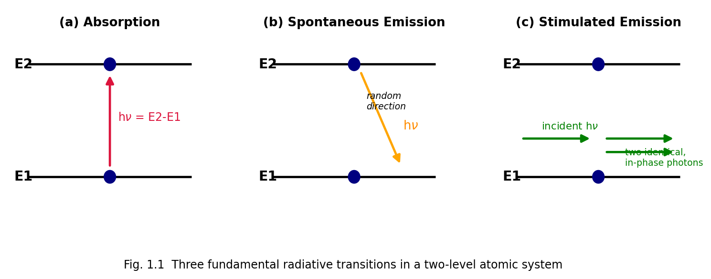
Fig. 1.1 Three fundamental radiative transitions in a two-level atomic system: (a) absorption, (b) spontaneous emission, (c) stimulated emission, showing that stimulated emission produces a photon identical in phase, frequency, direction and polarisation to the incident photon.
Comparison — Spontaneous vs. Stimulated Emission
| Property | Spontaneous Emission | Stimulated Emission |
|---|---|---|
| Trigger | Occurs on its own (no external photon needed) | Requires an incident photon of matching energy |
| Direction of emitted photon | Random, in all directions | Same direction as the stimulating photon |
| Phase | Random, uncorrelated | Same phase as the stimulating photon |
| Coherence | Incoherent | Coherent |
| Number of photons produced | One | Two (original + emitted), leading to amplification |
| Dominant regime | Low photon density / thermal sources | High photon density inside a laser cavity with population inversion |
| Rate expression | \[A_{21}N_{2}\] | \[B_{21}\rho(\nu)N_{2}\] |
Einstein derived the relationships between \(A_{21}\), \(B_{12}\) and \(B_{21}\) by considering an ensemble of atoms in thermal equilibrium with black-body (Planck) radiation at temperature \(T\), inside an enclosure (cavity) at temperature \(T\), and demanding that the resulting radiation density reproduce Planck’s law.
Setting up the rate equation. Consider two non-degenerate levels 1 and 2 with populations \(N_{1}\), \(N_{2}\) (\(N_{2} < N_{1}\) in thermal equilibrium) interacting with isotropic radiation of spectral energy density \(\rho(\nu)\). In equilibrium, the upward (absorption) rate must equal the total downward (spontaneous + stimulated) rate:
\[B_{12}\,\rho(\nu)\, N_{1}\mspace{6mu} = \mspace{6mu} A_{21}\, N_{2} + B_{21}\,\rho(\nu)\, N_{2}\]
Solving for \(\rho(\nu)\):
\[\rho(\nu) = \frac{A_{21}\, N_{2}}{B_{12}N_{1} - B_{21}N_{2}} = \frac{A_{21}}{B_{12}\frac{N_{1}}{N_{2}} - B_{21}}\]
In thermal equilibrium, the level populations follow the Boltzmann distribution:
\[\frac{N_{2}}{N_{1}} = \frac{g_{2}}{g_{1}}\, e^{- \left( E_{2} - E_{1} \right)/k_{B}T} = \frac{g_{2}}{g_{1}}\, e^{- h\nu/k_{B}T}\]
where \(g_{1},g_{2}\) are the degeneracies of the two levels and \(k_{B}\) is Boltzmann’s constant. Hence
\[\frac{N_{1}}{N_{2}} = \frac{g_{1}}{g_{2}}\, e^{h\nu/k_{B}T}\]
Substituting,
\[\rho(\nu) = \frac{A_{21}}{B_{12}\frac{g_{1}}{g_{2}}\, e^{h\nu/k_{B}T} - B_{21}} = \frac{A_{21}/B_{21}}{\frac{B_{12}g_{1}}{B_{21}g_{2}}\, e^{h\nu/k_{B}T} - 1}\]
For this expression to reduce to Planck’s radiation law,
\[\rho(\nu) = \frac{8\pi h\nu^{3}}{c^{3}} \cdot \frac{1}{e^{h\nu/k_{B}T} - 1}\]
as \(T \rightarrow \infty\) (or by comparing term by term for all \(T\)), two conditions must hold:
This is the celebrated Einstein relation, connecting the spontaneous and stimulated emission coefficients. It shows that \(A_{21}/B_{21} \propto \nu^{3}\) — spontaneous emission becomes overwhelmingly more probable relative to stimulated emission as the frequency increases. This is precisely why it is far easier to build masers (microwave, low \(\nu\)) than lasers (optical, high \(\nu\)): at optical frequencies an enormous stimulating photon flux (i.e., a resonant cavity building up \(\rho(\nu)\)) is required to make stimulated emission compete with spontaneous emission.
Ratio of stimulated to spontaneous emission rates:
\[\frac{R_{stim}}{R_{spon}} = \frac{B_{21}\rho(\nu)}{A_{21}} = \frac{\rho(\nu)c^{3}}{8\pi h\nu^{3}} = \frac{1}{e^{h\nu/k_{B}T} - 1}\]
At optical frequencies and ordinary temperatures this ratio is minuscule (\(\sim 10^{- 2}\) or less), confirming that spontaneous emission dominates in thermal sources — laser action requires an artificially large \(\rho(\nu)\) (achieved by cavity feedback) and a non-equilibrium population distribution (population inversion) to make stimulated emission dominant.
For a light wave traversing a medium of two-level atoms, the net rate of change of photon number depends on the difference between stimulated emission and absorption events:
\[\frac{dI}{dz} \propto \left( N_{2} - N_{1} \right)\]
Under thermal equilibrium, the Boltzmann law guarantees \(N_{1} > N_{2}\) always (since \(E_{2} > E_{1}\)), so \(\left( N_{2} - N_{1} \right) < 0\) and the beam is attenuated (absorption dominates) — this is the everyday, thermal-equilibrium situation.
For optical amplification (gain) rather than attenuation, we require
\[\boxed{N_{2} > N_{1}}\]
a condition called population inversion, since it is the inverse of the normal Boltzmann (thermal-equilibrium) ordering. Population inversion is a non-equilibrium condition and can never be achieved by thermal means alone (e.g. simply heating the medium) — it must be produced by an external energy input, called pumping.
Formal definition: Population inversion is a non-equilibrium condition of a laser medium in which a higher-energy state has a larger population of atoms/molecules than a lower-energy state, in contradiction to the Boltzmann distribution that governs thermal equilibrium.
A useful, formal way to express this is with a negative temperature: since \(N_{2}/N_{1} = \left( g_{2}/g_{1} \right)e^{- h\nu/k_{B}T}\), if \(N_{2} > N_{1}\) this equation is only satisfied for \(T < 0\). Such a “negative absolute temperature” is not a true thermodynamic temperature but a convenient bookkeeping device describing the inverted, non-equilibrium population.
Pumping is the process of supplying energy to the active (gain) medium of a laser from an external source in order to raise atoms/molecules from the ground state (or lower laser level) to the upper laser level, so as to create and sustain population inversion. Common pumping mechanisms include:
It is instructive to first ask whether population inversion — and hence laser action — is possible in a system with only two energy levels pumped by the very same radiation that would also be amplified. In such a system, as soon as \(N_{2}\) approaches \(N_{1}\) (i.e., as populations equalise, \(N_{1} = N_{2}\)), the rates of stimulated absorption (\(B_{12}\rho N_{1}\)) and stimulated emission (\(B_{21}\rho N_{2}\)) become equal (recall \(B_{12} = B_{21}\)), so the net pumping rate into level 2 vanishes — the system “bleaches” or saturates at \(N_{1} = N_{2}\) at best, and population inversion (\(N_{2} > N_{1}\)) can never be reached in a strictly two-level system pumped optically on the same transition. This fundamental result is why practical, continuously-operating lasers require at least three energy levels.
In a three-level laser, atoms are pumped from the ground state \(E_{0}\) to a short-lived excited “pump band” \(E_{2}\). From \(E_{2}\), atoms decay rapidly (by fast, non-radiative — typically phonon-assisted — transitions) to a relatively long-lived metastable state \(E_{1}\), which becomes the upper laser level. Because the metastable state has a long lifetime (microseconds to milliseconds, compared to nanoseconds for ordinary excited states), atoms accumulate there. Laser emission is the transition \(E_{1} \rightarrow E_{0}\), i.e., the lower laser level is the ground state itself.
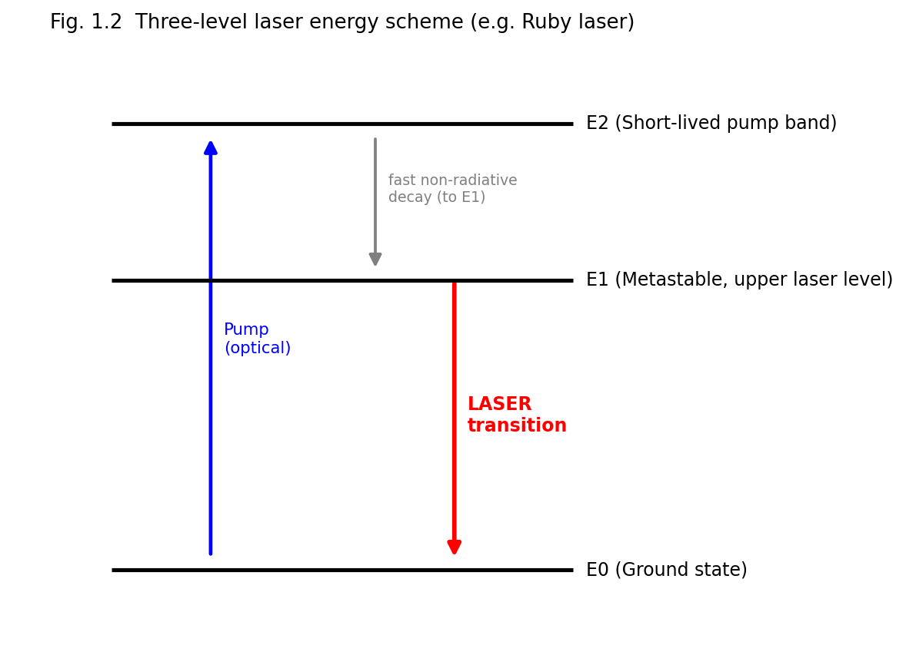
Fig. 1.2 Three-level laser energy scheme, as realised, for example, in the ruby laser.
Key drawback: because the lower laser level (\(E_{0}\)) is the ground state, which is normally heavily populated, achieving population inversion requires pumping more than half of all the ground-state atoms into the upper (metastable) level — an inherently inefficient process requiring very high pump powers. This is why three-level lasers (e.g., ruby) are typically pulsed rather than continuous-wave devices.
In a four-level laser, a fourth level is introduced below the upper laser level but above the ground state. Atoms are pumped from the ground state \(E_{0}\) to a short-lived pump band \(E_{3}\), decay rapidly and non-radiatively to the metastable upper laser level \(E_{2}\), and lasing occurs on the transition \(E_{2} \rightarrow E_{1}\), where \(E_{1}\) (the lower laser level) lies above the ground state \(E_{0}\). Because \(E_{1}\) is not the ground state, it is normally almost empty (rapidly and non-radiatively depopulated back to \(E_{0}\)) at ordinary temperatures (Boltzmann factor \(e^{- \left( E_{1} - E_{0} \right)/k_{B}T} \ll 1\) if \(E_{1} - E_{0} \gg k_{B}T\)).
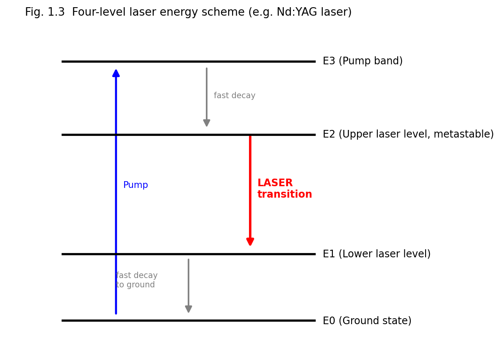
Fig. 1.3 Four-level laser energy scheme, as realised, for example, in the Nd:YAG laser.
Key advantage: since the lower laser level \(E_{1}\) is essentially unpopulated to begin with, population inversion between \(E_{2}\) and \(E_{1}\) is achieved as soon as even a small number of atoms are pumped into \(E_{2}\) — the threshold pump power required is much lower than for a three-level system, and continuous-wave (CW) operation becomes practical. Most modern, efficient lasers (Nd:YAG, He-Ne, CO2, semiconductor diode lasers) are four-level (or effectively four-level) systems.
Comparison — Three-Level vs. Four-Level Lasers
| Feature | Three-Level Laser | Four-Level Laser |
|---|---|---|
| Lower laser level | Ground state (heavily populated) | An excited level above ground state (nearly empty) |
| Population inversion threshold | High (must pump >50% of ground-state atoms) | Low (only a small population in upper level suffices) |
| Pumping power required | Very high | Comparatively low |
| Typical mode of operation | Pulsed | CW or pulsed |
| Efficiency | Lower | Higher |
| Examples | Ruby laser | Nd:YAG, He-Ne, CO2, semiconductor lasers |
When population inversion exists, an electromagnetic wave of frequency \(\nu\) passing through the gain medium grows in intensity according to
\[I(z) = I(0)\, e^{g(\nu)z}\]
where \(g(\nu)\), the gain coefficient (units: m\(^{- 1}\) or cm\(^{- 1}\)), is given (for a homogeneously broadened line, near line-centre) by
\[g(\nu) = \left\lbrack N_{2} - \frac{g_{2}}{g_{1}}N_{1} \right\rbrack\sigma(\nu)\]
where \(\sigma(\nu)\) is the stimulated-emission cross-section, related to \(B_{21}\) and the lineshape function \(g(\nu)\) (the normalised spectral lineshape) by
\[\sigma(\nu) = \frac{A_{21}\lambda^{2}}{8\pi n^{2}}\, g(\nu)\]
(\(n\) = refractive index of the medium, \(\lambda\) = vacuum wavelength). Practically, laser oscillation builds up only if the round-trip gain exceeds the round-trip loss of the cavity (see §1.9, threshold condition) — i.e. gain must overcome losses due to mirror transmission, scattering, diffraction and absorption in the cavity.
Every laser, irrespective of the particular gain medium, consists of three essential components (Fig. 1.4):
Fig. 1.4B (Animated) — A single stimulated-emission event triggers a cascading photon avalanche as it bounces between the resonator's two mirrors: each pass through the gain medium multiplies the number of coherent photons travelling in step, building up the laser's output intensity.
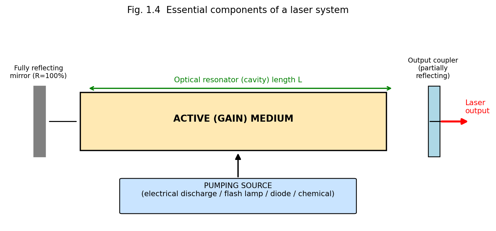
Fig. 1.4 Essential components of a laser system: pump source, active medium and optical resonator (formed by a fully reflecting mirror and a partially reflecting output coupler).
The optical resonator serves two purposes: (i) it provides the positive feedback necessary for the light to make many passes through the gain medium, and (ii) through its geometry it selects/reinforces certain frequencies (longitudinal modes) and spatial field distributions (transverse modes) that satisfy a resonance condition.
For steady-state oscillation to be sustained, the wave must reproduce itself (in amplitude and phase) after one complete round trip through the cavity of length \(L\) containing the gain medium and mirrors of reflectivities \(R_{1}\) and \(R_{2}\). The threshold condition for the onset of laser oscillation is
\[R_{1}R_{2}\, e^{2g_{th}L}\, e^{- 2\alpha L} = 1\quad \Rightarrow \quad g_{th} = \alpha + \frac{1}{2L}\ln\left( \frac{1}{R_{1}R_{2}} \right)\]
where \(\alpha\) represents the (non-useful) internal losses per unit length (absorption, scattering, diffraction), and \(g_{th}\) is the minimum (threshold) gain coefficient the population inversion must produce for oscillation to begin (and to be sustained against cavity losses). Below threshold, the device acts merely as an amplified-spontaneous-emission source (weak, incoherent glow); above threshold, coherent oscillation builds up rapidly and the output stabilises (saturates) at a level set by the balance between gain and loss (gain saturation).
A standing wave can exist inside the cavity only if the cavity length \(L\) is an integer multiple of half the wavelength inside the medium:
\[L = q\,\frac{\lambda}{2n},\quad\quad q = 1,2,3,\ldots\]
Each integer \(q\) defines a distinct longitudinal (axial) mode, with mode frequencies
\[\nu_{q} = q\,\frac{c}{2nL}\]
separated by the constant free spectral range
\[\Delta\nu = \nu_{q + 1} - \nu_{q} = \frac{c}{2nL}\]
Only those longitudinal modes falling within the gain bandwidth of the active medium (where \(g(\nu) \geq g_{th}\)) can actually oscillate; a laser may thus emit several closely-spaced longitudinal modes (“multimode” operation) or, with additional mode-selecting elements (etalons), a single mode.
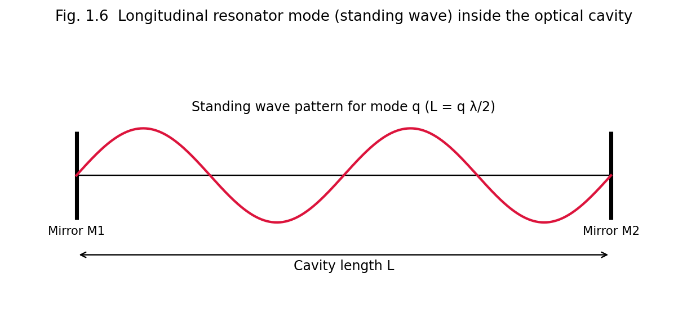
Fig. 1.6 A longitudinal resonator (standing-wave) mode inside the optical cavity; the cavity length \(L\) must equal an integral number of half-wavelengths.
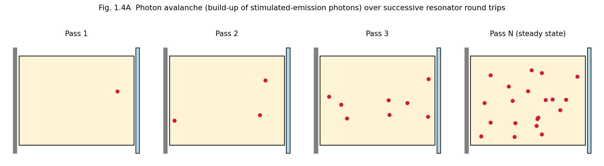
Fig. 1.4A Photon avalanche: successive resonator round trips multiply the number of coherent, stimulated-emission photons until the beam reaches its steady-state (saturated) intensity.
In addition to longitudinal modes, the resonator supports distinct transverse intensity patterns across the beam cross-section, labelled \(\text{TEM}_{mn}\) (Transverse ElectroMagnetic modes), where \(m,n\) are the number of intensity nodes along two perpendicular transverse directions. The TEM\(_{00}\) mode has a smooth, single-lobed Gaussian intensity profile, the lowest divergence, and the highest degree of spatial coherence — it is the mode most desired for practical applications and is selected using an intracavity aperture.
Resonators are classified by mirror curvature/geometry as plane-parallel (Fabry–Pérot), concentric (spherical), confocal, and hemispherical, or more generally as stable or unstable, according to the stability criterion (for mirrors of radii of curvature \(R_{1}\), \(R_{2}\) separated by \(L\)):
\[0 \leq g_{1}g_{2} \leq 1,\quad\quad\text{where }g_{i} = 1 - \frac{L}{R_{i}}\]
Stable resonators confine the beam by repeated refocusing (used in most gas and solid-state lasers); unstable resonators (used in high-gain, high-power lasers) allow larger mode volumes at the expense of higher diffraction losses, but efficiently extract energy from a large gain volume.
The quality factor \(Q\) of a resonator measures how well it stores optical energy relative to its losses:
\[Q = 2\pi\,\nu_{0}\,\frac{\text{energy stored in the cavity}}{\text{power lost}} = \omega_{0}\tau_{c}\]
where \(\tau_{c}\) is the photon lifetime (average time before a photon is lost from the cavity by transmission/absorption/scattering). Techniques such as Q-switching (rapidly switching the cavity Q from a low to a high value) are used to generate very short, high-peak-power laser pulses (see §1.11).
Laser radiation differs from conventional (thermal) light in four principal respects: coherence, monochromaticity, directionality, and brightness. Each has a precise physical/mathematical definition.
Temporal coherence describes the correlation of the phase of a light wave with itself at a later time at the same point in space — i.e., how well the wave can be predicted to remain in phase with an earlier copy of itself after a time delay \(\tau\). It is quantified by the coherence time \(\tau_{c}\) and the corresponding coherence length
\[l_{c} = c\,\tau_{c}\]
Temporal coherence is directly related to the spectral purity (monochromaticity) of the source: a source of frequency bandwidth \(\Delta\nu\) has a coherence time
\[\tau_{c} \approx \frac{1}{\Delta\nu}\]
Because laser output has an extremely narrow linewidth \(\Delta\nu\) (as low as a few Hz to kHz in stabilised single-mode lasers, versus \(10^{9}\)–\(10^{15}\) Hz for conventional sources), the coherence length of laser light can range from millimetres to many kilometres, compared with only a few wavelengths to a few centimetres for ordinary light sources. Temporal coherence is what makes two-beam interference (e.g. in a Michelson interferometer) observable over long path differences, and is what makes holography possible (Unit 3).
Spatial coherence describes the correlation of the phase of a light wave between two different points in a wavefront (perpendicular to the propagation direction) at the same instant. A spatially coherent source behaves, to a good approximation, as a single point source (or as a uniform-phase extended source), so that light from different parts of the beam can interfere constructively (as in Young’s double-slit experiment) even when both slits are illuminated by the same source aperture, unlike an ordinary extended thermal source in which different points radiate independently and incoherently. High spatial coherence is what allows a laser beam to be focused to a diffraction-limited spot and gives it low divergence (see below).
Because the resonator forces oscillation of only those waves travelling nearly along the cavity axis (all other directions suffer excessive diffraction/geometric loss), laser light emerges as a highly directional, narrow, nearly parallel beam. The (diffraction-limited) angular divergence of a TEM\(_{00}\) Gaussian beam of waist radius \(w_{0}\) is
\[\theta \approx \frac{\lambda}{\pi w_{0}}\]
For a typical He-Ne laser this divergence is only about 1 milliradian, allowing a laser beam to travel kilometres with little spreading — a property exploited in laser ranging, LIDAR, and alignment applications (Unit 5).
Laser output is concentrated in an extremely narrow band of wavelengths (in the ideal, single-longitudinal-mode limit, theoretically approaching the Schawlow–Townes linewidth, set fundamentally by spontaneous-emission-induced phase noise). Practical lasers achieve linewidths \(\Delta\nu/\nu \sim 10^{- 6}\)–\(10^{- 15}\), vastly narrower than the linewidths of spectral (discharge) lamps (\(\Delta\nu/\nu \sim 10^{- 4}\)–\(10^{- 6}\)) or thermal sources.
Radiance (brightness) is defined as the optical power emitted per unit source area per unit solid angle:
\[B = \frac{P}{A\,\Omega}\]
Because laser light combines high power with a very small emitting area and a very small divergence solid angle \(\Omega \sim \theta^{2}\), its brightness exceeds that of the most intense conventional (even thermal, high-temperature) sources by many orders of magnitude — a focused laser beam can, in principle, exceed the surface brightness of the Sun.
Summary Table — Laser Light vs. Ordinary (Thermal) Light
| Property | Laser Light | Ordinary Light |
|---|---|---|
| Coherence (temporal & spatial) | High | Very low / absent |
| Monochromaticity | Extremely narrow linewidth | Broad range of wavelengths |
| Directionality | Highly directional, low divergence | Diverges in all directions |
| Intensity/Brightness | Extremely high (concentrated) | Comparatively low, spread out |
| Focusability | Can be focused to a diffraction-limited spot | Cannot be focused as tightly |
The temporal coherence of a source is experimentally probed with a Michelson interferometer: the beam is split into two paths of adjustable path-length difference \(\Delta x\) (via a movable mirror) and recombined; interference fringes remain visible only while \(\Delta x\) is less than the coherence length \(l_{c} = c\tau_{c}\), and the fringe visibility
\[V = \frac{I_{\max} - I_{\min}}{I_{\max} + I_{\min}}\]
falls from unity (perfect coherence) toward zero as \(\Delta x\) approaches and exceeds \(l_{c}\). Spatial coherence, by contrast, is probed with Young’s double-slit experiment: fringes of high visibility are obtained across a wide slit separation only if the source possesses high spatial coherence (a small angular size, or effectively point-like emission, as for a single-transverse-mode TEM\(_{00}\) laser beam); an extended, spatially incoherent thermal source shows a rapid loss of fringe visibility as the slit separation is increased beyond the transverse coherence width.
Recasting the stability parameters \(g_{1} = 1 - L/R_{1}\) and \(g_{2} = 1 - L/R_{2}\) (§1.9.4) as Cartesian axes, the stability condition \(0 \leq g_{1}g_{2} \leq 1\) defines a bounded region (bordered by two branches of the rectangular hyperbola \(g_{1}g_{2} = 1\) and by the axes \(g_{1}g_{2} = 0\)) within which a resonator configuration is stable — meaning that a paraxial ray, after very many round trips, remains confined near the cavity axis rather than “walking off” and escaping the mirror apertures. Configurations lying exactly on the stability boundary (e.g. the plane-parallel resonator, \(R_{1} = R_{2} = \infty\), so \(g_{1} = g_{2} = 1\); or the confocal resonator, \(R_{1} = R_{2} = L\), so \(g_{1} = g_{2} = 0\)) are only marginally stable in the idealised geometric-optics picture and are extremely sensitive in practice to small mirror misalignment; most practical laser resonators are therefore designed with parameters placed safely within the interior of the stability region (e.g. the common near-hemispherical or near-concentric designs used in many gas and solid-state lasers).
Lasers may be operated in two broad temporal regimes:
Continuous-Wave (CW) lasers emit a steady, uninterrupted beam of (ideally) constant output power, the pump maintaining population inversion continuously above threshold. Four-level systems with efficient heat removal (gas lasers, many solid-state and semiconductor lasers) are well suited to CW operation. CW output is characterised by its average power (watts).
Pulsed lasers emit energy in discrete bursts (pulses), characterised by pulse energy (joules), pulse duration, repetition rate, and peak power (energy/pulse duration), which can vastly exceed the average power. Pulsed operation is used when very high instantaneous (peak) intensities are required (materials processing, nonlinear optics) or when the gain medium (e.g. ruby, a three-level system) cannot sustain CW population inversion because of pump-power/thermal limitations. Pulsed operation is achieved by:
Fig. 1.6B (Animated) — A standing (longitudinal resonator) wave inside the optical cavity oscillates in amplitude between the two fixed mirrors, which must always remain nodes — this constrains the cavity length L to an integral number of half-wavelengths, L = m·(λ/2).
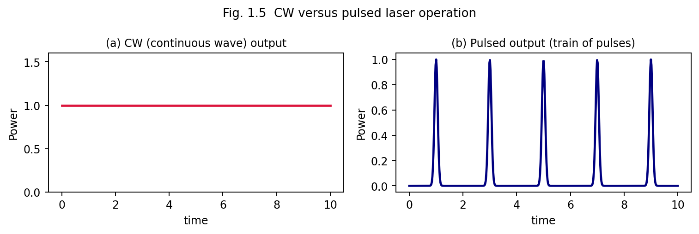
Fig. 1.5 Comparison of CW output (steady power) and pulsed output (a train of discrete, high-peak-power pulses).
Comparison — CW vs. Pulsed Lasers
| Feature | CW Laser | Pulsed Laser |
|---|---|---|
| Output | Continuous, constant power | Discrete bursts of energy |
| Peak power | Equal to average power | Can be very much higher than average power |
| Typical uses | Communication, alignment, continuous material heating, CW spectroscopy | Drilling, welding, ranging, nonlinear optics, ultrafast spectroscopy |
| Thermal load on gain medium | Continuous — requires efficient cooling | Distributed in bursts — average heating can be lower |
| Example | He-Ne, Ar-ion, CW Nd:YAG, CW CO2 | Ruby, Q-switched/mode-locked Nd:YAG, pulsed N2/excimer |
Lasers are broadly classified according to the physical state of the active medium:
These are treated systematically, with detailed constructions, in Unit 2.
A more quantitative picture of laser dynamics is obtained from the rate equations, which track the time evolution of the population inversion \(\Delta N = N_{2} - N_{1}\) and the intracavity photon number \(\phi\). For an idealised four-level laser (with pump rate \(R_{p}\) into the upper level, upper-level lifetime \(\tau_{2}\), and photon cavity lifetime \(\tau_{c}\)):
\[\frac{d\Delta N}{dt} = R_{p} - \frac{\Delta N}{\tau_{2}} - B\,\Delta N\,\phi\]
\[\frac{d\phi}{dt} = B\,\Delta N\,\phi - \frac{\phi}{\tau_{c}} + \left( \text{spontaneous contribution} \right)\]
where \(B\) is a stimulated-transition rate constant proportional to \(B_{21}\). In steady state (\(d\phi/dt = 0\), above threshold), the gain exactly balances cavity loss, which pins (clamps) the population inversion at its threshold value:
\[\Delta N_{th} = \frac{1}{B\tau_{c}}\]
independent of how hard the medium is pumped beyond threshold — any additional pump power above threshold goes entirely into increasing the photon number \(\phi\) (i.e., the output power), not into further increasing the inversion. This “gain clamping” behaviour explains why laser output power increases essentially linearly with pump power once threshold is exceeded:
\[P_{out} \propto \left( R_{p} - R_{p,th} \right)\]
a characteristic “kink” in the output-power-versus-pump-power curve at threshold that is one of the clearest experimental signatures distinguishing laser (stimulated-emission-dominated) output from ordinary spontaneous (LED-like, lamp-like) emission, which instead increases only gradually and shows no threshold kink.
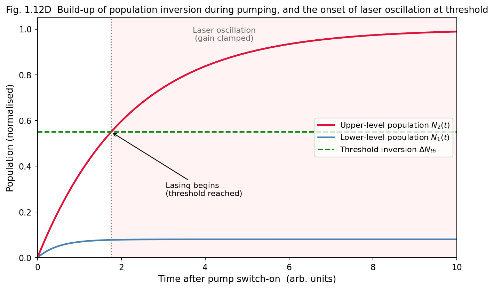
Fig. 1.12D Build-up of population inversion N2(t) during pumping: once the inversion crosses the threshold value, laser oscillation begins and the gain is clamped at its threshold value.
Even a laser operating in a single longitudinal mode does not have a mathematically infinite spectral purity: residual spontaneous emission events (which add photons of random phase into the oscillating mode) impose a fundamental, irreducible quantum-mechanical lower limit on the laser linewidth, the Schawlow–Townes linewidth:
\[\Delta\nu_{ST} = \frac{2\pi h\nu\,\left( \Delta\nu_{c} \right)^{2}}{P_{out}}\]
where \(\Delta\nu_{c}\) is the passive-cavity linewidth (inversely proportional to the cavity photon lifetime \(\tau_{c}\)) and \(P_{out}\) is the output power. In practice, technical noise sources (mechanical vibration of the cavity mirrors, pump-power fluctuations, thermal drifts) dominate over this fundamental quantum limit in ordinary lasers, and elaborate active stabilisation techniques are required to approach the Schawlow–Townes limit in precision applications such as frequency standards and gravitational-wave detection (e.g. LIGO).
Example 1.1. Calculate the ratio \(N_{2}/N_{1}\) for a two-level system in thermal equilibrium at T = 300 K for a transition corresponding to visible light of wavelength 600 nm (\(g_{1} = g_{2}\)).
Energy of transition: \(E = hc/\lambda = \left( 6.63 \times 10^{- 34} \right)\left( 3 \times 10^{8} \right)/\left( 600 \times 10^{- 9} \right) = 3.3 \times 10^{- 19}\,\text{J}\). \(k_{B}T\) at 300 K \(= 1.38 \times 10^{- 23} \times 300 = 4.14 \times 10^{- 21}\) J.
\[\frac{N_{2}}{N_{1}} = e^{- E/k_{B}T} = e^{- 3.3 \times 10^{- 19}/4.14 \times 10^{- 21}} = e^{- 79.7} \approx 10^{- 35}\]
This extraordinarily small ratio shows why, at optical frequencies and ordinary temperatures, the upper level of a thermal source is essentially unpopulated, confirming that thermal light sources cannot spontaneously exhibit population inversion — external pumping is indispensable for laser action.
Example 1.2. A laser cavity of length 30 cm contains a medium of refractive index 1. Calculate the frequency separation (free spectral range) between adjacent longitudinal modes.
\[\Delta\nu = \frac{c}{2nL} = \frac{3 \times 10^{8}}{2 \times 1 \times 0.30} = 5 \times 10^{8}\ \text{Hz} = 500\ \text{MHz}\]
Example 1.3. A He-Ne laser beam of wavelength 632.8 nm has a beam waist radius of 0.5 mm. Estimate its far-field divergence angle.
\[\theta \approx \frac{\lambda}{\pi w_{0}} = \frac{632.8 \times 10^{- 9}}{\pi \times 0.5 \times 10^{- 3}} \approx 4.0 \times 10^{- 4}\ \text{rad} \approx 0.4\ \text{mrad}\]
This very small divergence explains why a He-Ne laser beam remains only a few centimetres wide even after travelling many tens of metres.
| Quantity | Formula |
|---|---|
| Einstein relation | \[A_{21}/B_{21} = 8\pi h\nu^{3}/c^{3}\] |
| Boltzmann population ratio | \[N_{2}/N_{1} = \left( g_{2}/g_{1} \right)e^{- h\nu/k_{B}T}\] |
| Threshold gain | \[g_{th} = \alpha + \frac{1}{2L}\ln\left( 1/R_{1}R_{2} \right)\] |
| Longitudinal mode frequency | \[\nu_{q} = qc/2nL\] |
| Free spectral range | \[\Delta\nu = c/2nL\] |
| Coherence length | \[l_{c} = c\tau_{c} \approx c/\Delta\nu\] |
| Beam divergence (Gaussian TEM\(_{00}\)) | \[\theta \approx \lambda/\pi w_{0}\] |
| Resonator stability | \(0 \leq g_{1}g_{2} \leq 1\), \(g_{i} = 1 - L/R_{i}\) |
Solid-state lasers use ions doped in a crystalline or glass host. Ruby laser (Cr³⁺ in Al₂O₃, 694.3 nm, three-level, optically pumped by a flashlamp, typically pulsed). Nd:YAG (Nd³⁺ in Y₃Al₅O₁₂, 1064 nm, four-level, can run CW or pulsed, widely used in industrial cutting/welding and medicine).
Gas lasers. He-Ne laser (632.8 nm visible red, four-level; He atoms are excited by electric discharge and transfer energy to Ne via near-resonant collisions, producing population inversion in Ne). Ionic lasers (e.g. Argon-ion) use ionized gas for higher-energy visible/UV transitions. Molecular lasers (e.g. CO₂ laser, 10.6 μm) exploit vibrational-rotational transitions and deliver very high output powers, dominant in industrial cutting/welding.
Excimer lasers use short-lived diatomic molecules that exist only in the excited state (e.g. ArF, KrF), emitting in the UV — central to photolithography and eye surgery (LASIK).
Liquid (dye) lasers use organic dye molecules in solution; their broad vibrational bands make them widely tunable across the visible spectrum.
Semiconductor (diode) lasers use a forward-biased p-n junction where electron-hole recombination produces light; compact, efficient, directly current-modulated — the workhorse of telecom and consumer optics. Fibre lasers use a rare-earth-doped optical fibre as the gain medium, offering excellent beam quality and efficient heat dissipation for high-power industrial and telecom applications.
Having established the general theory of laser action in Unit 1, this unit examines the construction, working principle, energy-level scheme, characteristic parameters, advantages, limitations and applications of the principal families of lasers, classified by the physical state of the active (gain) medium: atomic, ionic, molecular, excimer (gas lasers), liquid (dye), solid-state, semiconductor and fibre lasers.
The He-Ne laser, demonstrated by Ali Javan, William Bennett and Donald Herriott in 1961, was the first CW gas laser and remains one of the most widely used lasers for alignment, interferometry, holography and teaching laboratories.
The active medium is a mixture of helium and neon gases (typical partial-pressure ratio He:Ne ≈ 10:1, total pressure ~1 torr) sealed inside a narrow-bore quartz/glass capillary discharge tube. Electrodes (anode and cathode) at the ends of the tube sustain a DC glow discharge (~2 kV, few mA) through the gas. The discharge tube is placed between two mirrors forming the optical resonator — one end fully reflecting (R ≈ 100%), the other partially reflecting (R ≈ 98–99%) to couple out the beam. Brewster-angle windows are often used at the tube ends to ensure the output is linearly polarised with minimal reflection loss.
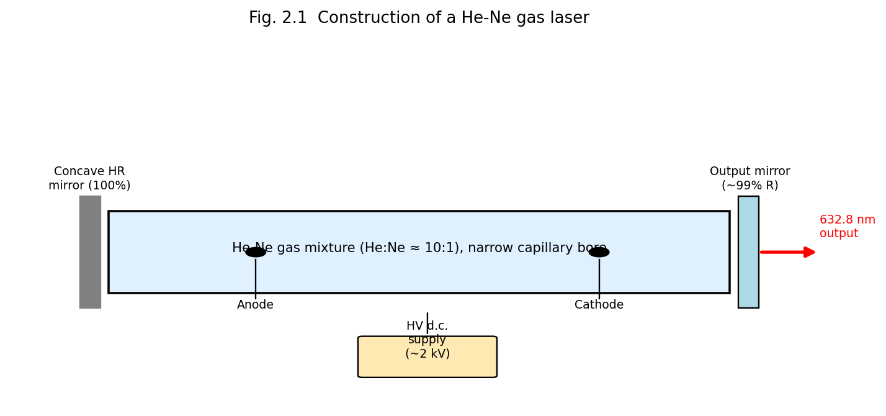
Fig. 2.1 Construction of a He-Ne gas laser: capillary discharge tube containing He-Ne gas mixture, anode/cathode for the DC discharge, and the resonator mirrors.
Electrons accelerated in the discharge collide with, and excite, helium atoms to the long-lived (metastable) \(2^{1}S\) and \(2^{3}S\) states. These helium metastable levels happen to lie very close in energy to the \(4S\) and \(5S\) excited levels of neon — a near-resonant coincidence. Consequently, excited He atoms transfer their energy efficiently to ground-state Ne atoms via inelastic (resonant) atom–atom collisions (collisions of the second kind):
\[\text{He}^{*} + \text{Ne} \rightarrow \text{He} + \text{Ne}^{*} + \Delta E\]
This selectively populates the Ne 5S and 4S levels (upper laser levels), while the lower laser levels (Ne 3P, 4P) remain sparsely populated (since He plays no role in populating them, and they decay rapidly to the 2P/2S levels via spontaneous emission and subsequently to the ground state through wall collisions in the narrow capillary bore — hence the requirement of a narrow bore for efficient He-Ne operation). This constitutes an effectively four-level laser scheme.
Neon provides several possible laser transitions, of which the most familiar is the visible red line at 632.8 nm (Ne 5S → 3P), though the He-Ne laser can also operate at 1.15 μm and 3.39 μm (infrared) and at 543.5 nm (green) with suitable mirror coatings.
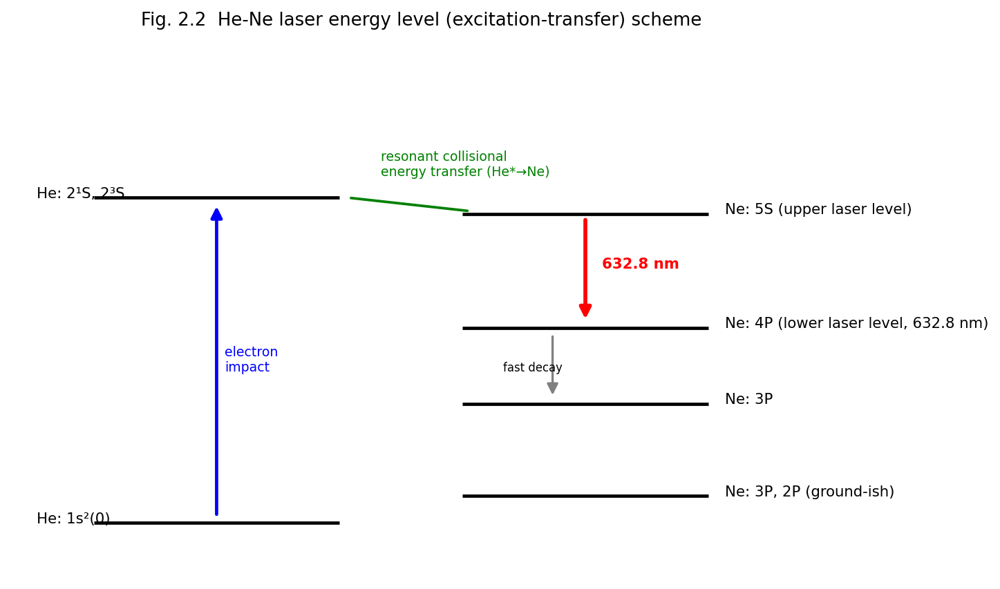
Fig. 2.2 He-Ne laser energy-level (excitation-transfer) scheme, showing electron-impact excitation of He, resonant collisional transfer to Ne, and the 632.8 nm laser transition.
| Parameter | Typical Value |
|---|---|
| Wavelength | 632.8 nm (visible red); also 1.15 μm, 3.39 μm, 543.5 nm |
| Output power | 0.5–50 mW (typical) |
| Mode of operation | CW |
| Efficiency | Very low (~0.01–0.1%) |
| Gain medium | He:Ne gas mixture (~10:1), low pressure |
| Pumping | DC/RF electrical discharge |
| Linewidth | Very narrow; high coherence length (up to several metres) |
Applications: interferometry and metrology, holography, alignment and surveying, barcode scanners, laboratory optics teaching, spectroscopy reference source. Limitations: low output power, low efficiency, fragile glass construction, requires high-voltage supply.
In ionic lasers, the active species is a singly or doubly ionised atom rather than a neutral atom. In the argon-ion laser, a high-current-density DC (or RF) discharge (tens of amperes, in a narrow bore tube usually of beryllium oxide (BeO) to withstand the high thermal load, surrounded by an axial magnetic field to confine the discharge plasma and prevent bore erosion) first ionises argon atoms, and a second violent electron collision excites the Ar⁺ ion to upper laser levels. Because two sequential collisions are required (a two-step excitation process), argon-ion lasers demand very high discharge current densities and dissipate large amounts of heat, requiring water cooling.
Laser transitions occur between excited states of Ar⁺, giving a family of lines in the blue-green, the strongest being 488.0 nm (blue) and 514.5 nm (green); with a total of about 10 lines available between 350–530 nm. The lower laser level decays rapidly (radiatively) to the Ar⁺ ground state, and the ion subsequently recombines with a free electron to return to neutral argon — the overall scheme, though ionic, again behaves as an effectively four-level laser.
| Parameter | Typical Value |
|---|---|
| Wavelength | 488.0 nm, 514.5 nm (multi-line, blue-green) |
| Output power | 0.1–20 W (CW) |
| Efficiency | Very low (~0.01–0.1%) |
| Cooling | Water cooling essential |
Applications: pumping tunable dye lasers and Ti:sapphire lasers, retinal photocoagulation (ophthalmology), Raman spectroscopy excitation, laser light shows, semiconductor wafer inspection. Limitations: very low efficiency, high power consumption, requires forced water cooling and a confining magnetic field, bulky power supply.
The CO₂ laser active medium is a gas mixture of CO₂, N₂ and He (in typical ratios such as 1:2:3) at low pressure, contained in a discharge tube (or, in higher-power designs, in a fast-flowing gas stream — “gas-dynamic” or “transverse-flow” CO₂ lasers, or sealed-off waveguide designs). A DC or RF electrical discharge excites the gas mixture. Resonator mirrors are typically gold-coated (highly reflective in the infrared) with one output mirror made of a material transparent to 10.6 μm radiation (e.g. germanium, zinc selenide, or a partially transmissive coupler for high-power industrial systems). CO₂ lasers are amongst the most efficient and highest-power (continuous or pulsed) lasers available.
Unlike atomic lasers, CO₂ laser action involves transitions between vibrational-rotational energy levels of the CO₂ molecule (a linear triatomic molecule with three normal vibrational modes: symmetric stretch \(\nu_{1}\), bending \(\nu_{2}\), and asymmetric stretch \(\nu_{3}\)). Electron-impact collisions in the discharge excite N₂ molecules into their first vibrationally excited state \(v = 1\), which lies extremely close in energy to the CO₂ (00°1) asymmetric-stretch level (the upper laser level) — again a resonant energy-transfer mechanism analogous to He→Ne transfer:
\[\text{N}_{2}(v = 1) + \text{CO}_{2}\left( 00^{\circ}0 \right) \rightarrow \text{N}_{2}(v = 0) + \text{CO}_{2}\left( 00^{\circ}1 \right)\]
Since N₂ has no permanent dipole moment, its vibrationally excited state is metastable (cannot decay by electric-dipole radiation) and thus acts as an efficient, long-lived energy-storage reservoir feeding CO₂. Lasing occurs on two principal transitions from the (00°1) level: to (10°0) giving 10.6 μm, and to (02°0) giving 9.6 μm (10.6 μm being the stronger, more commonly used line). Helium in the mixture assists by efficiently conducting heat away from the discharge (preventing thermal population of the lower laser levels, which would destroy the inversion) and by depopulating the lower CO₂ levels via collisions, restoring the ground state.
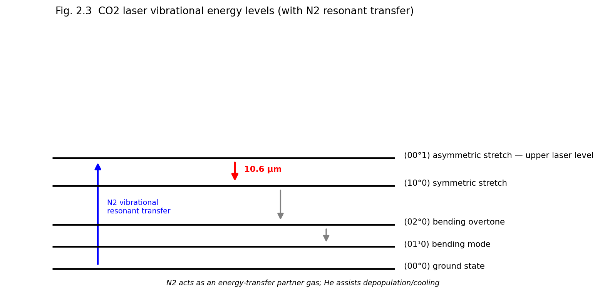
Fig. 2.3 CO2 laser vibrational energy levels showing resonant N2 to CO2 energy transfer and the 10.6 μm laser transition; He assists cooling and depopulation of the lower level.
| Parameter | Typical Value |
|---|---|
| Wavelength | 10.6 μm (far infrared) |
| Output power | mW to tens of kilowatts (CW); very high pulse energies |
| Efficiency | High (15–20%), the highest among gas lasers |
| Gas mixture | CO₂ : N₂ : He |
Applications: industrial materials processing — cutting, welding, drilling of metals, engraving (Unit 5); surgical laser scalpel; laser marking; military range-finding and directed-energy applications; scientific research (spectroscopy, isotope separation). Limitations: long wavelength cannot be transmitted through ordinary glass optics or optical fibre (requires special IR-transparent optics); bulky gas-handling/flow systems for high-power operation; not easily focused to as small a spot as visible/near-IR lasers because of the diffraction limit (\(\propto \lambda\)).
The term “excimer” (excited dimer) refers to a diatomic molecule that is stable only in an electronically excited state and dissociates (is unbound / repulsive) in its ground state. Common excimer lasers use noble-gas halides (ArF, KrF, XeCl, XeF), which are formed transiently in a high-energy electrical discharge or electron-beam-pumped mixture of a noble gas, a halogen-donor gas (e.g. F₂, HCl) and a buffer gas:
\[\text{Ar}^{*} + \text{F}_{2} \rightarrow \text{ArF}^{*} + \text{F}\]
Because the ground state of ArF* is essentially unbound/repulsive (dissociating almost immediately after emission), the lower “laser level” is intrinsically and continuously depopulated — this is an ideal (indeed the most efficient possible) four-level scheme, easily maintaining population inversion.
Excimer lasers are pulsed devices, pumped by a fast, high-voltage transverse electrical discharge (or electron beam, for the highest-energy systems), operating in the ultraviolet:
| Excimer | Wavelength |
|---|---|
| ArF | 193 nm |
| KrF | 248 nm |
| XeCl | 308 nm |
| XeF | 351 nm |
Characteristics: pulsed operation (pulse durations ~10–50 ns), high pulse energies (up to several joules), high average power at high repetition rates, deep-UV output.
Applications: photolithography for semiconductor integrated-circuit fabrication (ArF 193 nm is the workhorse of modern IC manufacturing), refractive eye surgery (LASIK, using 193 nm ArF for precise corneal ablation), micromachining, UV spectroscopy and photochemistry, pumping of dye lasers.
Limitations: the reactive and corrosive/toxic halogen-donor gases (F₂, HCl) require careful handling and corrosion-resistant components; the gas mixture must be periodically replenished; UV radiation poses eye/skin safety hazards; comparatively complex, high-maintenance systems.
The active medium is an organic dye (e.g. Rhodamine 6G, coumarin) dissolved in an appropriate solvent (ethanol, methanol, water), typically circulated through the pump/gain region as a free-flowing jet stream (to avoid thermal degradation and photobleaching that would occur in a static cell). The dye is optically pumped, usually by another laser (nitrogen laser, excimer laser, frequency-doubled Nd:YAG, or a flash lamp for older designs).
Dye molecules possess broad, overlapping vibrational-rotational sub-levels within their electronic ground (\(S_{0}\)) and first excited singlet (\(S_{1}\)) states, giving rise to broad absorption and emission bands (four-level-like behaviour, since fast non-radiative relaxation within the vibrational manifold of \(S_{1}\), and within \(S_{0}\), ensures the lower laser level is quickly depopulated). This large homogeneous linewidth is the key distinguishing feature of dye lasers: it makes them continuously tunable over a wide range (often 30–40 nm or more per dye) by inserting a wavelength-selective element (diffraction grating, prism, birefringent filter) inside the resonator.
Characteristics: wide tunability (a family of different dyes together spans the near-UV through near-IR, roughly 320–1200 nm); can be operated CW or pulsed; comparatively low efficiency but capable of high peak powers when pulsed.
Applications: spectroscopy requiring wavelength tunability (including saturation and high-resolution spectroscopy, Unit 4), photodynamic cancer therapy, isotope separation, dye-laser-pumped nonlinear-optics experiments.
Limitations: dyes photodegrade (bleach) with use and must be periodically replaced/replenished; flowing-dye systems are messy and maintenance-intensive; toxic/flammable solvents; largely superseded in many applications today by tunable solid-state lasers (e.g. Ti:sapphire) and optical parametric oscillators.
In solid-state lasers, the active species is an impurity ion (typically a transition-metal or rare-earth ion) doped at low concentration into a transparent insulating host crystal or glass. The host provides mechanical rigidity and a fixed crystal-field environment; the dopant ion provides the laser transition.
Construction: A cylindrical rod of synthetic ruby (sapphire, Al₂O₃, doped with ~0.05% Cr³⁺ by weight, which gives the crystal its characteristic pink colour) with polished, parallel end-faces — one fully silvered, the other partially silvered to serve as the resonator mirrors directly on the rod itself in the original Maiman design (external mirrors are used in modern versions). The rod is surrounded by a helical (or, in modern designs, a linear) xenon flash lamp that provides intense pulses of broadband optical pump light.
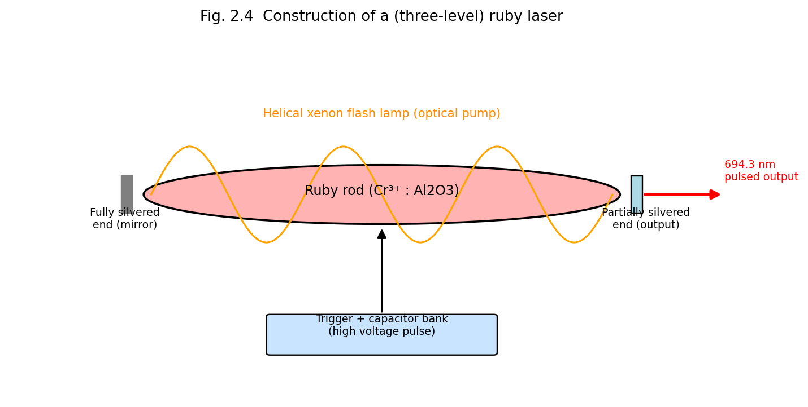
Fig. 2.4 Construction of the (three-level) ruby laser: Cr3+-doped ruby rod optically pumped by a helical xenon flash lamp inside a reflective pump cavity.
Working: Cr³⁺ ions are pumped by the green/blue bands of the flash-lamp spectrum from the ground state to broad excited absorption bands; they decay rapidly, non-radiatively, to the long-lived (~3 ms) metastable \(^{2}E\) level (the upper laser level). Laser emission occurs on the \(^{2}E \rightarrow^{4}A_{2}\) transition at 694.3 nm (deep red) — this is the archetypal three-level laser system (§1.6.2), and hence operates in pulsed mode with a relatively high threshold pump energy.
Applications: historically important as the first working laser (1960); pulsed holography; laser rangefinders; tattoo and hair removal (dermatology); ruby is now largely superseded by Nd:YAG for most industrial/medical uses but remains pedagogically important.
Construction: A rod of yttrium aluminium garnet (YAG) crystal doped with neodymium (Nd³⁺) ions, optically pumped either by a krypton (or xenon) arc lamp housed in an elliptical reflective pump cavity (focusing lamp light efficiently onto the rod) or, in modern systems, by diode lasers (diode-pumped solid-state, DPSS, lasers) matched to the Nd³⁺ absorption bands, offering far higher efficiency, compactness and beam quality.
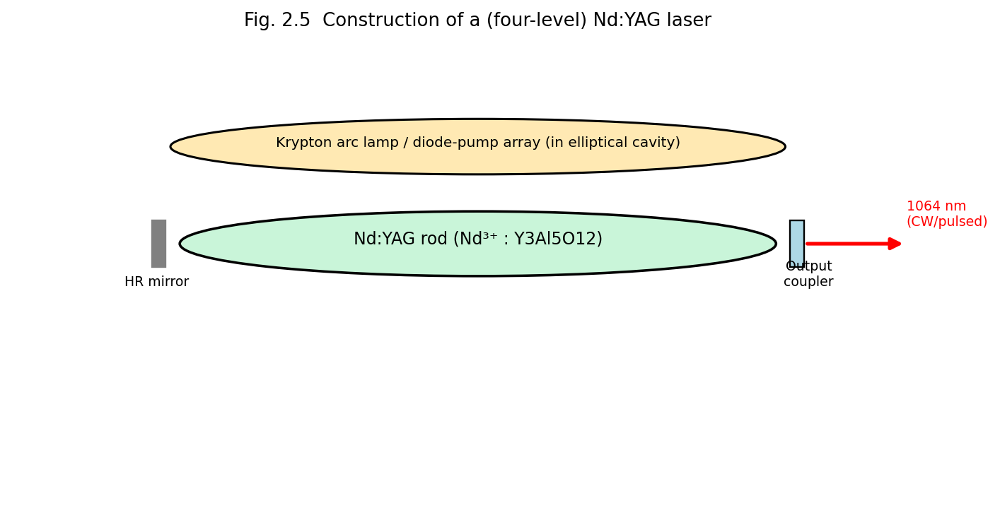
Fig. 2.5 Construction of the (four-level) Nd:YAG laser: Nd3+-doped YAG rod pumped by an arc lamp/diode array.
Working: Nd³⁺ is pumped from the ground state to broad absorption bands, decays rapidly and non-radiatively to the metastable \(^{4}F_{3/2}\) level (upper laser level, lifetime ~230 μs), and lasing occurs to the \(^{4}I_{11/2}\) level (lower laser level) at 1064 nm (near-infrared); since the \(^{4}I_{11/2}\) level lies well above the ground state \(^{4}I_{9/2}\) and is rapidly depopulated thermally, Nd:YAG is a genuine four-level system, and hence operates efficiently in CW as well as pulsed (including Q-switched and mode-locked) modes.
Characteristics/Applications: high average power (CW, up to hundreds of watts to kW in industrial systems) and, when Q-switched, very high peak powers, used in metal cutting/welding/drilling, surgery, frequency-doubled (532 nm, green) for pumping Ti:sapphire and dye lasers, laser range-finding/military designators, industrial marking.
| Feature | Ruby Laser | Nd:YAG Laser |
|---|---|---|
| Active ion | Cr³⁺ | Nd³⁺ |
| Host | Al₂O₃ (sapphire) | Y₃Al₅O₁₂ (YAG) |
| Laser scheme | Three-level | Four-level |
| Wavelength | 694.3 nm (visible red) | 1064 nm (near-IR) |
| Mode of operation | Pulsed only | CW and pulsed |
| Efficiency | Low | Higher |
| Threshold pump energy | High | Comparatively low |
In a semiconductor laser, population inversion is created between the conduction band (electrons) and valence band (holes) of a heavily-doped p–n junction diode, forward biased so as to inject electrons and holes into a thin active region, where they recombine radiatively, emitting photons at an energy close to the semiconductor bandgap \(E_{g}\) (\(h\nu \approx E_{g}\)). Modern diode lasers use a double-heterostructure design — a thin, lower-bandgap active layer (e.g. GaAs) sandwiched between two higher-bandgap cladding layers (e.g. p- and n-type AlGaAs) — which simultaneously confines both the injected carriers and the optical field to the thin active region (waveguiding by the refractive-index step between core and cladding), dramatically lowering the threshold current compared to simple homojunction designs.
The two cleaved crystal facets perpendicular to the junction plane, at the ends of the device, act as the resonator mirrors: because of the semiconductor’s high refractive index (\(n \approx 3.5\)), the Fresnel reflectivity at a bare cleaved facet (~30%) is often sufficient feedback without additional mirror coatings.
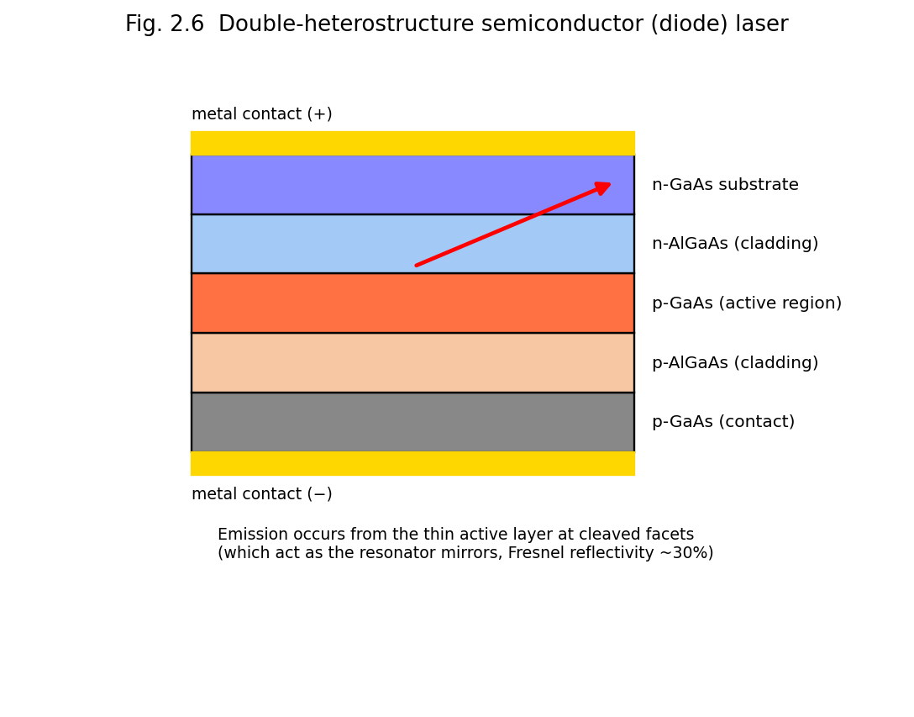
Fig. 2.6 Double-heterostructure semiconductor (diode) laser: p-AlGaAs/GaAs active region/n-AlGaAs sandwich with metal contacts; light is emitted from the thin active layer at the cleaved facets.
At low forward bias (below the lasing threshold current), the device emits by spontaneous emission (LED-like behaviour). Above the threshold current density \(J_{th}\), sufficient carrier density accumulates in the active region to create population inversion, and stimulated emission dominates, producing coherent laser output. The wavelength is set primarily by the bandgap of the active-region material and can be tuned across the visible to mid-infrared by choice of semiconductor alloy composition (e.g. InGaAsP for telecom wavelengths 1.3–1.55 μm, AlGaAs for 780–850 nm, InGaN for blue/violet ~405 nm, GaN for green/blue).
Characteristics: extremely compact (chip-scale, ~mm size), very high electrical-to-optical efficiency (up to 50–70%), low operating voltage/current, directly current-modulatable at very high speed (GHz), inexpensive in mass production, wide range of available wavelengths.
Applications: optical-fibre telecommunications (Unit 3), CD/DVD/Blu-ray optical data storage, laser printers and barcode scanners, pump sources for solid-state and fibre lasers (DPSS, fibre-laser pumping), laser pointers, sensing (LIDAR), display technology.
Limitations: inherently higher beam divergence and poorer beam quality (more astigmatic/elliptical) than gas or solid-state lasers because of the small, asymmetric emitting aperture (requires collimating/shaping optics); comparatively lower single-device output power (though scalable via diode arrays/bars); sensitive to temperature (wavelength drifts with temperature) and to electrical transients (electrostatic discharge).
A fibre laser uses an optical fibre whose core is doped with rare-earth ions (commonly erbium (Er³⁺), ytterbium (Yb³⁺), or Er/Yb co-doped) as the active (gain) medium. The fibre is typically a double-clad design: an inner core (doped, single-mode, carries the laser light) surrounded by an inner cladding (multi-mode, large area, carries and confines the pump light from a diode laser as it is gradually absorbed along the fibre length by the doped core) and an outer cladding. Feedback is provided either by conventional bulk mirrors at the fibre ends or, more commonly in modern designs, by fibre Bragg gratings (FBGs) — periodic refractive-index perturbations written directly into the fibre core that act as narrow-band, wavelength-selective mirrors.
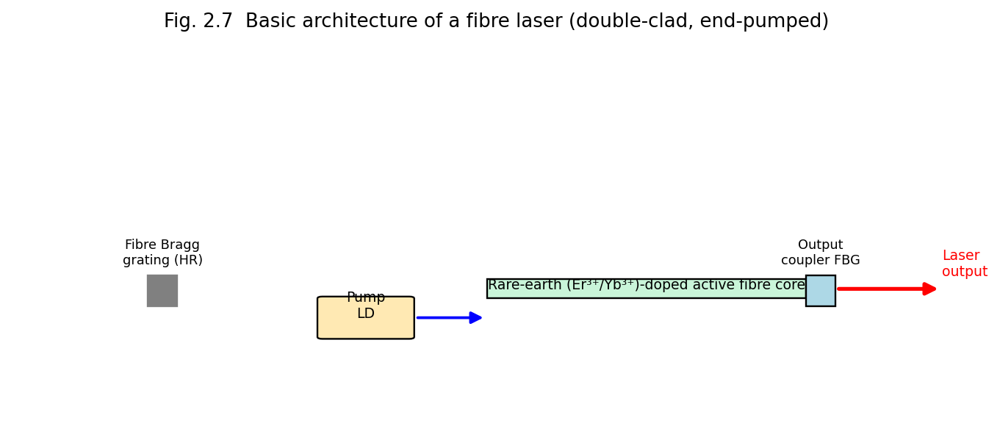
Fig. 2.7 Basic architecture of a fibre laser: diode pump light launched into a rare-earth-doped double-clad active fibre, bounded by fibre Bragg grating reflectors.
Characteristics: the long, thin, flexible gain fibre offers an extremely large surface-area-to-volume ratio (excellent heat dissipation, enabling very high average CW powers — kilowatts — with good beam quality), high electrical efficiency, robustness (no free-space optical alignment needed once fabricated), compact and lightweight compared to equivalent-power bulk solid-state lasers.
Applications: high-power industrial cutting/welding/marking (increasingly replacing CO₂ and Nd:YAG lasers in many industrial applications, Unit 5), telecommunications amplification (erbium-doped fibre amplifiers, EDFAs — Unit 3), medical and scientific instrumentation, LIDAR and remote sensing, defence directed-energy systems.
Limitations: nonlinear optical effects (stimulated Raman/Brillouin scattering, self-phase modulation) can limit achievable peak power/pulse energy in a long fibre; limited choice of gain wavelengths (set by available rare-earth-ion transitions); careful thermal/mode management is needed at extreme powers.
Nitrogen (N₂) laser. A purely molecular gas laser (unlike CO₂, it uses no auxiliary energy-transfer partner gas) that lases on an electronic (not vibrational) transition of the N₂ molecule at 337.1 nm (UV), pumped by an extremely fast, high-voltage transverse electrical discharge. Because the upper laser level has a shorter radiative lifetime than the lower laser level (a “self-terminating” transition), population inversion can only be sustained for a few nanoseconds, so the N₂ laser is inherently a pulsed-only, superradiant device (it typically has such high single-pass gain that it operates as an amplifier of spontaneous emission without even requiring a high-reflectivity cavity mirror). It is widely used as a simple, inexpensive pump source for pulsed dye lasers.
Helium–Cadmium (He-Cd) laser. A metal-vapour ionic gas laser: cadmium metal is thermally vaporised into a He buffer-gas discharge (via a technique called cataphoresis, which transports Cd⁺ ions uniformly along the discharge tube), and lasing occurs on Cd⁺ ionic transitions at 325 nm (UV) and 441.6 nm (blue), pumped by a mechanism of Penning ionisation/charge transfer from He metastables, analogous in spirit to the He-Ne energy-transfer scheme. Used in photolithography, fluorescence excitation, and laser printing.
Chemical lasers (HF/DF). Population inversion is produced directly by the energy released in a highly exothermic chemical reaction, e.g.
\[\text{H}_{2} + \text{F} \rightarrow \text{HF}^{*} + \text{H}\]
in which the HF product molecule is preferentially formed in a vibrationally excited state, giving population inversion between vibrational levels of HF without any electrical or optical pumping at all — the chemical reaction itself supplies the pump energy. HF/DF chemical lasers emit in the mid-infrared (2.6–3.3 μm for HF) and have historically been developed for very high continuous power (megawatt-class, e.g. the airborne/ground-based directed-energy laser programmes) since chemical reactants can in principle supply energy at a rate not limited by electrical power-supply engineering.
Example 2.1. A CO₂ laser delivers a continuous output power of 100 W from an electrical input power of 600 W. Calculate its efficiency, and compare it qualitatively with a typical He-Ne laser of efficiency 0.05%.
\[\eta = \frac{P_{out}}{P_{in}} \times 100\% = \frac{100}{600} \times 100\% \approx 16.7\%\]
This is about three orders of magnitude higher than the typical He-Ne laser efficiency (~0.05%), consistent with the general trend that molecular vibrational lasers (CO₂) and semiconductor diode lasers are intrinsically far more efficient than atomic or ionic gas lasers, which suffer large quantum-defect and excitation-pathway losses.
The onset of lasing in a diode laser occurs at a well-defined threshold current \(I_{th}\), below which the device emits weak, broad-spectrum spontaneous emission (LED-like) and above which stimulated emission dominates, producing a sharp increase in the slope of the light-output-versus-current (L-I) characteristic — directly analogous to the pump-threshold behaviour described generally in §1.12A. The threshold current density is approximately
\[J_{th} \approx \frac{e\, d\, N_{th}}{\eta_{i}\,\tau_{s}}\]
where \(d\) is the active-layer thickness, \(N_{th}\) the threshold carrier density required for transparency/gain, \(\eta_{i}\) the internal quantum efficiency, and \(\tau_{s}\) the spontaneous carrier lifetime. Because \(J_{th}\) scales with the active-layer thickness \(d\), the double-heterostructure design (§2.7.1), which confines carriers to an extremely thin active layer (as thin as tens of nanometres in modern quantum-well laser diodes), dramatically reduces the threshold current relative to early, thick-active-region homojunction designs — a key reason why modern diode lasers can operate continuously at room temperature with only milliamps of threshold current, whereas the earliest (1962) semiconductor lasers required cryogenic cooling and pulsed operation to avoid thermal runaway.
Unlike all the lasers discussed above, a free-electron laser does not use a bound-electron atomic/molecular/semiconductor transition at all. Instead, a beam of free, relativistic electrons (from a particle accelerator) is passed through a spatially periodic magnetic field structure called a wiggler (or undulator), which forces the electrons into a sinusoidal transverse trajectory; the transversely oscillating (accelerating) relativistic electrons emit synchrotron-like radiation, and under the right conditions (an appropriately designed optical cavity or, for X-ray FELs, self-amplified spontaneous emission over a very long undulator) this radiation is coherently amplified. Because the emission wavelength depends on the electron beam energy and the wiggler period/field strength — both externally, continuously adjustable — free-electron lasers are unique in offering very broad, continuous wavelength tunability, from microwaves through the visible to X-rays, though at the cost of requiring a large, expensive particle-accelerator infrastructure, restricting FELs to a small number of major national research facilities.
| Laser Type | Active Medium | Typical Wavelength | Pumping | Operation | Typical Efficiency |
|---|---|---|---|---|---|
| He-Ne | He-Ne gas | 632.8 nm | Electrical discharge | CW | ~0.01–0.1% |
| Argon-ion | Ar⁺ | 488/514.5 nm | Electrical discharge | CW | ~0.01–0.1% |
| CO₂ | CO₂:N₂:He | 10.6 μm | Electrical discharge | CW/pulsed | ~15–20% |
| Excimer (ArF/KrF) | Noble-gas halide | 193/248 nm | Discharge/e-beam | Pulsed | ~1–2% |
| Dye | Organic dye in solvent | Tunable, ~320–1200 nm | Optical (laser/lamp) | CW/pulsed | ~1% |
| Ruby | Cr³⁺:Al₂O₃ | 694.3 nm | Flash lamp | Pulsed | <1% |
| Nd:YAG | Nd³⁺:YAG | 1064 nm | Lamp/diode | CW/pulsed | ~1–3% (lamp), higher (diode) |
| Semiconductor diode | p-n junction (GaAs, InGaAsP, etc.) | 0.4–2 μm (material-dependent) | Injection current | CW/pulsed | ~30–70% |
| Fibre | Rare-earth-doped fibre | ~1.0–2.0 μm (dopant-dependent) | Diode laser | CW/pulsed | ~20–30% |
Holography records the complete wavefront (both amplitude and phase) scattered from an object by interfering it with a coherent reference beam on a high-resolution photographic emulsion. Unlike an ordinary photograph (intensity only), a hologram reconstructs a full 3-D image when illuminated by a beam matching the original reference beam. HNDT (Holographic Non-Destructive Testing) compares two holograms of a component recorded before and after stress, revealing microscopic surface deformation via interference fringes — used for crack/defect detection without damaging the part. Holographic data storage exploits the volume of the recording medium to store many holograms in the same physical space via angular or wavelength multiplexing, offering very high data density.
Optical fibre communication. Light is guided along the fibre core by total internal reflection. Step-index vs graded-index and single-mode vs multimode fibre designs trade off bandwidth, dispersion and ease of coupling. Fibre amplifiers (e.g. Erbium-Doped Fibre Amplifiers, EDFA) amplify optical signals directly, without opto-electronic conversion, and are essential to long-haul telecom links. Fibre-optic sensors exploit changes in intensity, phase or polarization of guided light to sense strain, temperature, pressure or chemical concentration remotely and immune to electromagnetic interference.
Holography (from the Greek holos = “whole” + graphein = “to write”) is a technique, invented by Dennis Gabor in 1948 (Nobel Prize, 1971), for recording and subsequently reconstructing the complete wavefront of light scattered by an object — both its amplitude and phase information — rather than merely the intensity distribution recorded by an ordinary photograph. The result is a genuinely three-dimensional image possessing parallax: the viewer can move their head and see the object from slightly different angles, exactly as with a real object.
Ordinary photography records only the intensity (\(\propto\) amplitude²) of light arriving at the film, with all phase information lost — this is why a photograph is only a flat, two-dimensional record. Holography overcomes this limitation by using the wave-interference between the light scattered from the object (the object beam) and a mutually-coherent reference beam derived from the same source, to encode the phase information of the object wave as a spatially varying fringe (interference) pattern of intensity, which can be recorded on an ordinary photographic (or now, digital) recording medium.
Holography became practical only after the invention of the laser (1960), because it fundamentally requires a light source of very high temporal and spatial coherence — this is why holography is treated immediately after the study of laser properties (Unit 1, §1.10).
Let the object wave arriving at the recording plate be represented by a complex amplitude
\[O(x,y) = O_{0}(x,y)\, e^{i\phi_{O}(x,y)}\]
and the reference wave (typically a simple, known plane or spherical wave) by
\[R(x,y) = R_{0}\, e^{i\phi_{R}(x,y)}\]
Both waves, being derived from the same coherent laser source (typically by splitting the beam with a beam-splitter), interfere at the recording plate, producing a total field \(O + R\), whose recorded intensity is
\[I(x,y) = |O + R|^{2} = |O|^{2} + |R|^{2} + OR^{*} + O^{*}R\]
\[= O_{0}^{2} + R_{0}^{2} + 2\, O_{0}R_{0}\cos\left\lbrack \phi_{O}(x,y) - \phi_{R}(x,y) \right\rbrack\]
This is the key result: although the recording medium (photographic emulsion) can only respond to intensity, the recorded intensity pattern \(I(x,y)\) contains, encoded within the amplitude and spacing of its interference fringes, complete information about both the amplitude \(O_{0}(x,y)\) and the phase \(\phi_{O}(x,y)\) of the original object wave. The developed photographic plate — the hologram — is thus a complex diffraction grating (a fine, irregular fringe pattern) that stores the full wavefront information, even though the object itself may have been removed or destroyed after exposure.
The standard (off-axis, Leith–Upatnieks, 1962) recording setup consists of:
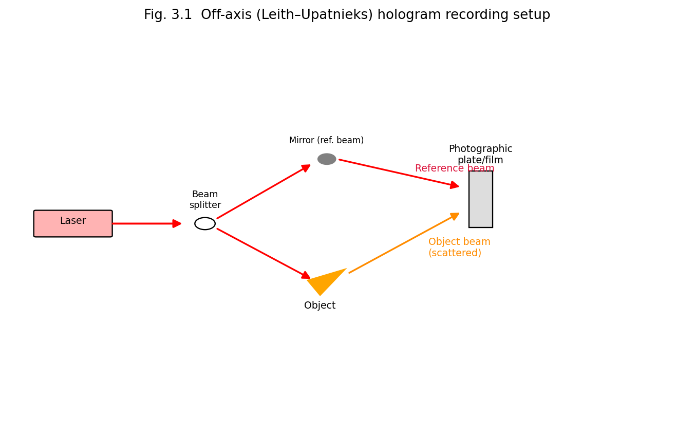
Fig. 3.1 Off-axis (Leith-Upatnieks) hologram recording setup: laser beam split into a reference beam and an object beam, both converging coherently on the photographic plate.
After exposure, the plate is chemically developed and fixed (as in ordinary photography), yielding the finished hologram — a seemingly random, fine-grained pattern that, to the naked eye, shows no resemblance to the original object at all.
To reconstruct (view) the recorded image, the developed hologram is illuminated with a beam identical (or closely similar in wavelength and direction) to the original reference beam \(R(x,y)\). The amplitude transmittance of the developed hologram is proportional to the recorded intensity, \(t(x,y) \propto I(x,y)\), so the field transmitted through the illuminated hologram is
\[R \cdot t \propto R\left( O_{0}^{2} + R_{0}^{2} \right) + R \cdot R\, O^{*} + |R|^{2}\, O\]
Examining the three terms:
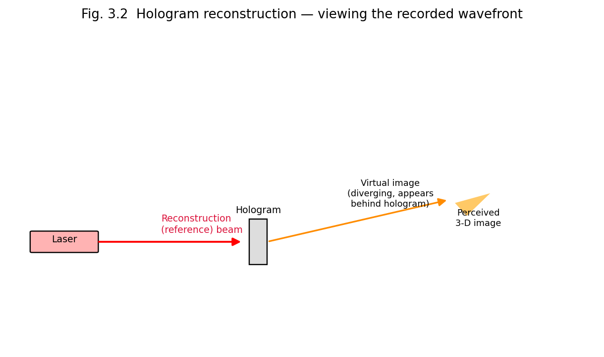
Fig. 3.2 Hologram reconstruction: illuminating the developed hologram with the reference beam regenerates the original object wavefront, producing a virtual three-dimensional image.
Key conceptual point: because every small area of the hologram has, during recording, received light scattered from (in principle) the entire object, each small fragment of a hologram, if cut out and illuminated alone, is capable of reconstructing the entire object (albeit viewed through a smaller aperture, with correspondingly reduced resolution) — a strikingly different property from an ordinary photograph, where a torn fragment shows only the corresponding fragment of the picture.
Holographic interferometry compares two holographic exposures of the same object recorded at two different times (or under two different loading/stress/thermal conditions) on the same photographic plate. Upon reconstruction, the two slightly different wavefronts interfere with each other, producing a fringe pattern that directly maps out any minute surface or internal deformation, strain, or vibration that occurred between the two exposures (with sensitivity down to a fraction of the light wavelength, i.e., of the order of tens of nanometres).
This forms the basis of Holographic Non-Destructive Testing (HNDT), a technique for inspecting the structural integrity of components (aerospace panels, turbine blades, tyres, composite materials, welds) without physically damaging or altering them:
Advantages of HNDT: whole-field (entire surface examined simultaneously, not point-by-point), extremely high sensitivity (sub-micron), completely non-contact and non-destructive, applicable to complex-shaped and composite structures where conventional NDT (ultrasonic, radiographic) methods are difficult to apply. Limitations: requires a highly vibration-isolated environment and coherent laser source; interpretation of complex fringe patterns requires skill; not well suited to very rough or highly diffusely scattering surfaces without special treatment.
Because a hologram can store information throughout the volume (thickness) of the recording medium (not just at its surface, as in conventional optical/magnetic storage), and because many different holograms can be superimposed in the same volume by recording each with a reference beam at a slightly different angle or wavelength (angle/wavelength multiplexing), holographic storage offers, in principle, extremely high data-storage densities (potentially exceeding conventional storage by orders of magnitude) and very fast parallel (page-wise) read-out, since an entire 2-D data page (e.g. an array of binary bits encoded as bright/dark pixels on a spatial light modulator) can be recorded and reconstructed in a single exposure/read-out event, rather than bit-by-bit.
| Feature | Ordinary Photography | Holography |
|---|---|---|
| Information recorded | Intensity only | Both amplitude and phase |
| Dimensionality of image | 2-D (no parallax) | 3-D (full parallax) |
| Focusing | Requires a lens/camera to focus the image at the film | No imaging lens is needed at the recording stage |
| Effect of damage/tearing | Torn portion is permanently lost | Any small fragment can reconstruct the whole scene (lower resolution) |
| Light source requirement | Any light source | Highly coherent (laser) source required |
An optical fibre is a thin, flexible, cylindrical waveguide made of transparent dielectric material (glass or plastic) that guides light along its length by repeated total internal reflection (TIR). The basic structure (Fig. 3.3) consists of three coaxial regions:
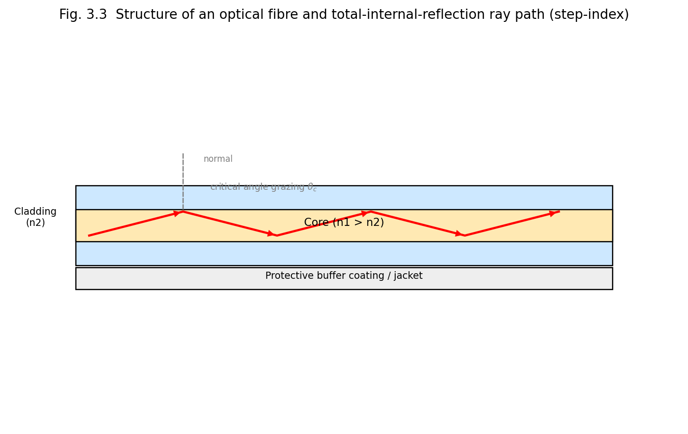
Fig. 3.3 Structure of an optical fibre (core, cladding, buffer) and the total-internal-reflection ray path along the core (step-index fibre).
By Snell’s law, a ray travelling in a denser medium (\(n_{1}\)) incident on the boundary with a rarer medium (\(n_{2} < n_{1}\)) at an angle of incidence \(\theta\) (measured from the normal) is partly refracted and partly reflected; as \(\theta\) increases, the refraction angle approaches 90°, and beyond a critical angle \(\theta_{c}\), given by
\[\sin\theta_{c} = \frac{n_{2}}{n_{1}}\]
all the light is reflected back into the denser medium — total internal reflection. In an optical fibre, the core-cladding interface is designed so that light launched into the core at a sufficiently shallow (grazing) angle to the fibre axis undergoes TIR at every core-cladding interaction, so that it is guided along the length of the fibre with (ideally) no loss due to refraction/leakage at the boundary, bouncing in a zig-zag path along a step-index fibre core.
The numerical aperture quantifies the light-gathering ability of the fibre: the maximum angle (relative to the fibre axis), \(\theta_{\max}\), within which an incident ray, upon entering the fibre end-face from an external medium of refractive index \(n_{0}\) (usually air, \(n_{0} = 1\)), will strike the core-cladding interface at or beyond the critical angle \(\theta_{c}\) and hence be guided by TIR (Fig. 3.4).
Consider a ray entering the flat fibre end-face at angle \(\theta_{i}\) to the fibre axis, refracting to angle \(\theta_{r}\) inside the core (Snell’s law at the end-face: \(n_{0}\sin\theta_{i} = n_{1}\sin\theta_{r}\)), and then striking the core-cladding boundary at angle \(\left( 90{^\circ} - \theta_{r} \right)\) to the normal of that boundary. For guidance, we require
\[90{^\circ} - \theta_{r} \geq \theta_{c}\quad \Rightarrow \quad\theta_{r} \leq 90{^\circ} - \theta_{c}\]
The maximum acceptance angle \(\theta_{\max}\) corresponds to the limiting case \(\theta_{r} = 90{^\circ} - \theta_{c}\), i.e. \(\cos\theta_{r} = sin\theta_{c} = n_{2}/n_{1}\), so \(\sin\theta_{r} = \sqrt{1 - \left( n_{2}/n_{1} \right)^{2}}\). Then
\[n_{0}\sin\theta_{\max} = n_{1}\sin\theta_{r} = n_{1}\sqrt{1 - \left( \frac{n_{2}}{n_{1}} \right)^{2}} = \sqrt{n_{1}^{2} - n_{2}^{2}}\]
Hence the numerical aperture is defined as
\[\boxed{NA = n_{0}\sin\theta_{\max} = \sqrt{n_{1}^{2} - n_{2}^{2}}}\]
For \(n_{0} = 1\) (air), \(NA = sin\theta_{\max}\). It is also convenient to define the fractional refractive-index difference
\[\Delta = \frac{n_{1} - n_{2}}{n_{1}} \approx \frac{n_{1}^{2} - n_{2}^{2}}{2n_{1}^{2}}\]
so that \(NA \approx n_{1}\sqrt{2\Delta}\). All rays entering the fibre end-face within the cone of half-angle \(\theta_{\max}\) — the acceptance cone — will be captured and guided by the fibre; rays outside this cone strike the cladding boundary at less than the critical angle and are refracted out, being lost.
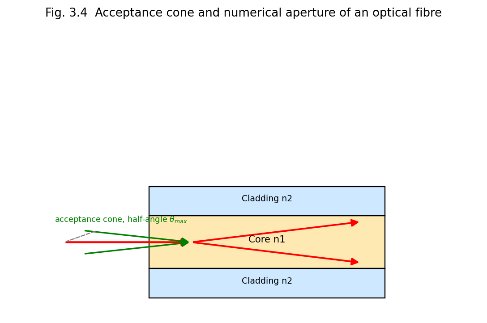
Fig. 3.4 Acceptance cone and numerical aperture of an optical fibre.
Optical fibres are classified in two independent ways — by the refractive-index profile of the core, and by the number of modes (propagation paths) they support.
Comparison — Step-Index vs. Graded-Index; Single-Mode vs. Multimode
| Feature | Step-Index Multimode | Graded-Index Multimode | Single-Mode (Step-Index) |
|---|---|---|---|
| Core diameter | Large (~50–200 μm) | Large (~50–100 μm) | Small (~8–10 μm) |
| Index profile | Uniform, sharp step | Gradually varying (parabolic) | Uniform, sharp step |
| Modal dispersion | High | Reduced | Absent (single ray path) |
| Bandwidth | Low | Moderate | Very high |
| Typical use | Short, low-speed links | Medium-distance LANs | Long-haul, high-speed telecom |
| Coupling ease (from source) | Easy | Easy | Difficult (requires precise alignment) |
Signal power decreases exponentially with distance along the fibre; attenuation is expressed in decibels per kilometre:
\[\alpha\,\left( \text{dB/km} \right) = \frac{10}{L}\log_{10}\left( \frac{P_{in}}{P_{out}} \right)\]
Principal loss mechanisms include:
In addition to attenuation (§3.13), the information-carrying capacity of a fibre link is fundamentally limited by dispersion — the spreading, in time, of an optical pulse as it propagates along the fibre, which ultimately causes adjacent data pulses to overlap and become indistinguishable at the receiver. Three principal mechanisms contribute:
The total pulse spreading (in time) determines the maximum usable bit rate \(B\) for a given fibre length \(L\), often expressed as a fibre’s characteristic bandwidth-length product \(B \times L\) (units: MHz·km or GHz·km), a figure of merit allowing direct comparison of different fibre types and designs; single-mode fibre, being free of the (typically dominant) modal-dispersion contribution, achieves bandwidth-length products orders of magnitude higher than multimode fibre, which is why virtually all long-haul, high-bit-rate telecommunication links use single-mode fibre operating near the “zero-dispersion wavelength” (~1310 nm for standard silica fibre, where material and waveguide dispersion cancel) or with dispersion-shifted/dispersion-compensated designs optimised for the low-loss 1550 nm window.
Example 3.1. An optical fibre has a core refractive index \(n_{1} = 1.50\) and a cladding refractive index \(n_{2} = 1.47\). Calculate (a) the critical angle, (b) the numerical aperture, and (c) the acceptance angle in air.
\(\sin\theta_{c} = n_{2}/n_{1} = 1.47/1.50 = 0.980 \Rightarrow \theta_{c} \approx 78.5{^\circ}\)
\(NA = \sqrt{n_{1}^{2} - n_{2}^{2}} = \sqrt{(1.50)^{2} - (1.47)^{2}} = \sqrt{2.25 - 2.1609} = \sqrt{0.0891} \approx 0.2985\)
\(\theta_{\max} = \sin^{- 1}(NA) = \sin^{- 1}(0.2985) \approx 17.4{^\circ}\)
Example 3.2. A 20 km fibre link has an input power of 1 mW and an output power of 10 μW. Calculate the attenuation in dB/km.
\[\alpha = \frac{10}{L}\log_{10}\left( \frac{P_{in}}{P_{out}} \right) = \frac{10}{20}\log_{10}\left( \frac{1000}{10} \right) = 0.5 \times \log_{10}(100) = 0.5 \times 2 = 1.0\ \text{dB/km}\]
An optical-fibre communication link (Fig. 3.5) converts an electrical information signal into an optical signal, transmits it along the fibre, and reconverts it back to an electrical signal:
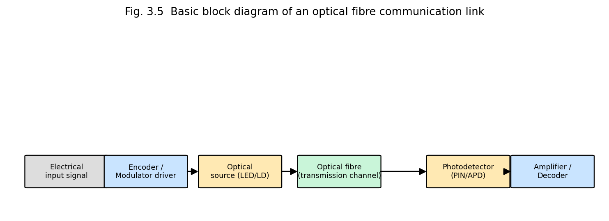
Fig. 3.5 Basic block diagram of an optical fibre communication link: electrical signal, modulator driver, optical source, fibre channel, photodetector, and receiver electronics.
Key components: an optical source (LED for lower-cost/lower-bandwidth links, or a semiconductor laser diode for high-bandwidth, long-haul links — Unit 2, §2.7), the fibre itself (the transmission medium), and a photodetector (a PIN or avalanche photodiode) that converts the received optical signal back into an electrical current.
Advantages of fibre-optic communication over conventional copper-wire/coaxial-cable transmission:
Long-haul fibre links require periodic amplification to overcome accumulated attenuation. The Erbium-Doped Fibre Amplifier (EDFA) is the dominant technology used in modern telecommunication networks: a short length of silica fibre, whose core is doped with erbium (Er³⁺) ions, is spliced into the transmission line and “pumped” by a diode laser (typically at 980 nm or 1480 nm) via a wavelength-division multiplexing coupler. The pump light excites Er³⁺ ions to a metastable upper level; the weak, attenuated signal (at ~1550 nm, coinciding with an Er³⁺ emission band — chosen deliberately for this reason) travelling through the doped fibre then stimulates emission from these excited ions, coherently amplifying the signal directly in the optical domain, without ever needing to convert it back to an electrical signal (unlike older electronic “regenerator” repeaters). EDFAs can simultaneously amplify many wavelength-division-multiplexed (WDM) channels over a broad gain bandwidth (~1530–1565 nm), a critical enabling technology for the modern high-capacity global fibre-optic internet backbone.
Because the light propagating in a fibre is sensitive to external perturbations (strain, temperature, pressure, vibration, refractive-index changes, magnetic/electric fields via appropriate coatings), optical fibres can themselves serve as distributed or point sensors, in addition to their role as a transmission medium.
Advantages of fibre-optic sensors: immune to electromagnetic interference, can operate in hazardous/explosive or electrically noisy environments, capable of remote and distributed sensing over long distances (tens of kilometres) using a single fibre, small size and light weight, high sensitivity.
A fibre Bragg grating (§3.16) consists of a periodic modulation of the core refractive index, of period \(\Lambda\), written along a short section of the fibre. Light propagating along the fibre is partially reflected at each successive index perturbation; these many small reflected contributions interfere constructively (reinforcing each other into a single, strong reflected wave) only for a wavelength satisfying the Bragg condition
\[\boxed{\lambda_{B} = 2\, n_{eff}\,\Lambda}\]
where \(n_{eff}\) is the effective (modal) refractive index of the guided mode. All other wavelengths pass through the grating with little reflection. When the grating region is mechanically strained (elongated/compressed) or its temperature changed, both the grating period \(\Lambda\) and (to a smaller extent, via the elasto-optic/thermo-optic effect) the effective index \(n_{eff}\) change, causing a proportional shift in the reflected Bragg wavelength:
\[\frac{\Delta\lambda_{B}}{\lambda_{B}} = \left( 1 - p_{e} \right)\,\varepsilon + \left( \alpha_{\Lambda} + \alpha_{n} \right)\,\Delta T\]
where \(\varepsilon\) is the applied strain, \(p_{e}\) the effective photo-elastic coefficient, and \(\alpha_{\Lambda},\alpha_{n}\) the thermal-expansion and thermo-optic coefficients respectively. Measuring this Bragg-wavelength shift (with a spectrometer or a tunable filter) forms the direct working principle of FBG strain/temperature sensors (§3.16).
| Quantity | Formula |
|---|---|
| Recorded hologram intensity | \[I = O_{0}^{2} + R_{0}^{2} + 2O_{0}R_{0}\cos\left( \phi_{O} - \phi_{R} \right)\] |
| Critical angle | \[\sin\theta_{c} = n_{2}/n_{1}\] |
| Numerical aperture | \[NA = n_{0}\sin\theta_{\max} = \sqrt{n_{1}^{2} - n_{2}^{2}}\] |
| Fractional index difference | \[\Delta = \left( n_{1} - n_{2} \right)/n_{1}\] |
| V-number (normalised frequency) | \(V = (2\pi a/\lambda)\, NA\); single mode if \(V < 2.405\) |
| Fibre attenuation | \[\alpha\,\left( \text{dB/km} \right) = (10/L)\log_{10}\left( P_{in}/P_{out} \right)\] |
Saturation spectroscopy is a Doppler-free technique: a strong "pump" beam saturates (partially depletes) a velocity subgroup of atoms resonant with it, and a weaker counter-propagating "probe" beam reveals a narrow dip (Lamb dip) at line centre, resolving structure hidden under Doppler broadening.
Excited-state spectroscopy uses lasers to selectively populate excited states and probe their subsequent decay, revealing lifetimes and branching ratios inaccessible with conventional lamps.
Non-linear spectroscopy exploits high laser intensities to drive multi-photon and non-linear optical processes (e.g. two-photon absorption, harmonic generation), extending accessible transitions and improving resolution.
Time-domain spectroscopy uses ultrafast (pico/femtosecond) laser pulses combined with pump-probe techniques to follow chemical reaction dynamics and carrier relaxation in materials in real time.
Stimulated Raman emission converts pump photons into a Stokes-shifted output through stimulated inelastic scattering, used for tunable coherent light generation and Raman lasers/amplifiers. Laser fusion (Inertial Confinement Fusion) uses many high-power laser beams focused symmetrically on a fuel pellet to compress and heat it to fusion conditions. Medical applications include laser surgery (cutting/coagulation via controlled tissue ablation), ophthalmology (LASIK, retinal photocoagulation), and dermatology; photo-chemical applications use laser light to selectively drive chemical reactions (photodynamic therapy, laser-induced chemistry).
The unique properties of laser light established in Unit 1 — extreme monochromaticity, high intensity/brightness, tunability (for certain laser types), coherence and directionality, and (for pulsed/mode-locked lasers) very short pulse duration — make lasers indispensable tools for modern scientific investigation. This unit surveys the principal applications of lasers in spectroscopy and other areas of physical, chemical and biomedical science: saturation spectroscopy, excited-state spectroscopy, nonlinear spectroscopy, time-domain spectroscopy, stimulated Raman emission, laser fusion, medical applications, and photochemical applications.
In a gas at temperature \(T\), atoms/molecules move with a Maxwell–Boltzmann distribution of velocities; an atom moving with velocity component \(v_{z}\) along the direction of an observing/exciting light beam sees the light Doppler-shifted, so that atoms of different velocities absorb/emit at slightly different apparent frequencies. The net effect, when the absorption/emission of the whole ensemble is observed, is a Doppler-broadened spectral line of Gaussian profile with full width at half maximum
\[\Delta\nu_{D} = \nu_{0}\sqrt{\frac{8k_{B}T\ln 2}{mc^{2}}}\]
which, for typical atomic transitions at room temperature, is orders of magnitude broader than the intrinsic natural linewidth of the transition (set by the spontaneous-emission lifetime, \(\Delta\nu_{nat} = 1/2\pi\tau\)). This Doppler broadening masks fine details of atomic/molecular structure (isotope shifts, hyperfine structure, closely-spaced fine-structure components) that would otherwise be resolvable. The high spectral purity and tunability of lasers made it possible to develop Doppler-free techniques — most importantly, saturation spectroscopy — that circumvent this fundamental limitation.
Principle. Saturation (Doppler-free) spectroscopy uses two counter-propagating, mutually coherent laser beams derived from the same tunable laser and traversing the same region of an absorbing (low-pressure) gas cell: a strong pump (saturating) beam and a much weaker probe beam, travelling in opposite directions (Fig. 4.2).
Because the two beams travel in opposite directions through the gas, an atom moving with velocity \(v_{z}\) sees the pump beam Doppler-shifted by \(+ kv_{z}\) and the probe beam Doppler-shifted by \(- kv_{z}\) (or vice versa, depending on sign convention) — the two beams are resonant with the same atom (same velocity class) only for atoms with \(v_{z} \approx 0\) (i.e. those moving perpendicular, or very nearly so, to the beam direction), when the laser frequency is tuned exactly to the true (Doppler-free) atomic transition frequency \(\nu_{0}\).
When the pump beam is tuned off the exact line-centre, it interacts strongly with (and “saturates” — partially depletes the ground-state population of, via optical pumping/power broadening) one particular velocity class of atoms, while the counter-propagating weak probe beam, at the same laser frequency but Doppler-shifted oppositely, interacts with a different velocity class, and is therefore largely unaffected — the probe beam experiences the full, unsaturated Doppler-broadened absorption. But when the laser frequency is tuned exactly to \(\nu_{0}\) (line centre), both beams interact with the same zero-velocity atoms; the strong pump beam saturates (partially bleaches) this common velocity group, so the weak probe beam then experiences reduced absorption — a narrow dip (“Lamb dip”) appears in the probe-beam absorption spectrum, precisely at \(\nu_{0}\), with a width set by the much narrower natural (homogeneous) linewidth rather than the broad Doppler width.
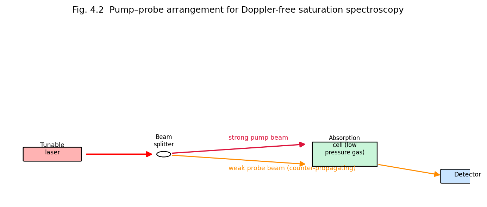
Fig. 4.2 Pump-probe arrangement for Doppler-free saturation spectroscopy: a strong pump beam and weak counter-propagating probe beam derived from the same tunable laser interact with the same (zero-velocity) atoms only at exact line-centre.
Result and significance. Saturation spectroscopy resolves spectral features (hyperfine splittings, isotope shifts, closely spaced fine-structure lines) that are completely hidden under ordinary Doppler-broadened absorption, achieving resolution limited essentially by the natural linewidth (or by residual power/transit-time broadening) — improvements of two to three orders of magnitude in resolution over conventional spectroscopy. It underlies, among other things, the precise frequency stabilisation of lasers (e.g. the iodine-stabilised He-Ne laser) used as wavelength/frequency standards, and precision tests of fundamental physics (e.g. the Lamb shift, Rydberg constant measurements).
Conventional absorption spectroscopy probes transitions from the (thermally populated) ground state. Excited-state spectroscopy uses an intense laser (the “pump”) to first populate a selected excited state of the atom/molecule, and then studies the subsequent absorption or emission spectrum arising from that excited state (using a second, tunable probe laser, or by monitoring the fluorescence/emission spectrum) — thereby directly determining energy levels, lifetimes and transition probabilities of excited states that are inaccessible from the ground state alone (because such transitions may be forbidden by selection rules from the ground state, or the relevant higher excited states may lie at energies not reachable in a single step from the ground state). Excited-state (pump-probe) spectroscopy is central to understanding photochemical reaction intermediates, excited-state lifetimes, and energy-transfer pathways in complex molecules.
At the very high electric field intensities achievable with laser beams (especially focused, pulsed lasers), the induced polarisation of the medium is no longer simply proportional to the applied field (as assumed in ordinary, linear optics); rather, the polarisation must be expanded as a power series
\[P = \varepsilon_{0}\left( \chi^{(1)}E + \chi^{(2)}E^{2} + \chi^{(3)}E^{3} + \cdots \right)\]
where \(\chi^{(1)}\) is the ordinary (linear) susceptibility and \(\chi^{(2)},\chi^{(3)},\ldots\) are the nonlinear susceptibilities. These nonlinear terms give rise to a rich variety of phenomena that are the subject matter of nonlinear spectroscopy and nonlinear optics generally:
Nonlinear spectroscopic techniques generally require the high peak intensities available only from (often pulsed) laser sources, and provide information (state symmetries, ultrafast dynamics, background-free selectivity) not accessible by ordinary linear spectroscopy.
Time-domain (ultrafast/pump-probe) spectroscopy exploits the ability of mode-locked lasers to generate extremely short optical pulses (picoseconds down to a few femtoseconds) to directly observe the time evolution of fast physical, chemical and biological processes — molecular vibrations, chemical bond breaking/forming, electronic relaxation, energy/charge transfer, and photochemical reaction dynamics — occurring on timescales far shorter than can be resolved by any electronic detector.
Principle (pump-probe technique). A short laser pulse is split into a strong pump pulse, which initiates (excites) the process under study at time \(t = 0\), and a weaker probe pulse, whose arrival at the sample is delayed relative to the pump by a precisely controllable optical path-length difference \(\Delta x\) (using a mechanical delay stage), corresponding to a time delay
\[\Delta t = \frac{\Delta x}{c}\]
(a delay of just 1 mm in path length corresponds to a time delay of only ~3.3 picoseconds, illustrating why femtosecond-resolution timing is achievable using ordinary mechanical translation stages). By recording the probe-pulse absorption/transmission/reflectivity as a function of \(\Delta t\) and repeating for many different delays, the transient state of the sample can be mapped out with time resolution limited essentially only by the pulse duration itself.
Applications: direct observation of chemical reaction transition states (the foundation of femtochemistry, pioneered by Ahmed Zewail, Nobel Prize 1999); study of ultrafast carrier dynamics in semiconductors and photovoltaic materials; investigation of the primary events of photosynthesis and vision (retinal isomerisation); characterisation of ultrafast optical/photonic devices and materials.
When monochromatic light (frequency \(\nu_{0}\)) is scattered by a molecule, most of the scattered light retains the same frequency (elastic, Rayleigh scattering), but a small fraction is scattered inelastically: the molecule undergoes a change of vibrational (or rotational) state, exchanging a quantum of vibrational energy \(h\nu_{v}\) with the photon field. If the molecule gains vibrational energy (ends in a higher vibrational state), the scattered photon has correspondingly lower energy — a Stokes line at \(\nu_{0} - \nu_{v}\); if the molecule loses vibrational energy (starting from an already vibrationally excited state and ending in the ground vibrational state), the scattered photon has higher energy — an anti-Stokes line at \(\nu_{0} + \nu_{v}\) (much weaker at ordinary temperatures, since the thermal population of excited vibrational states is small).
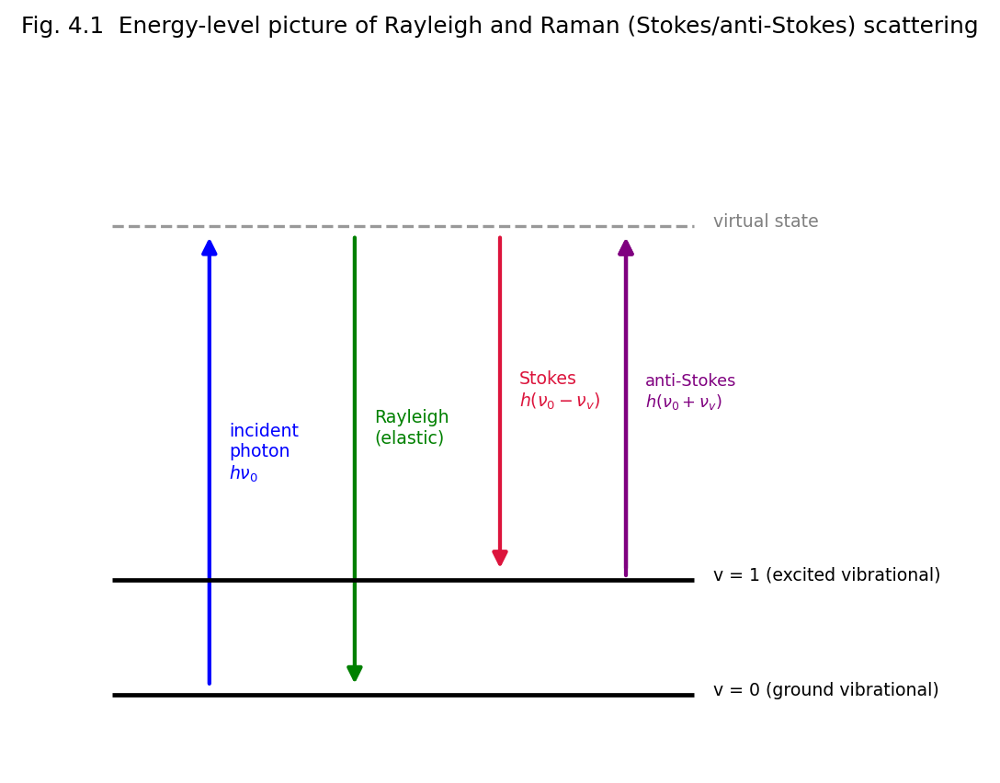
Fig. 4.1 Energy-level picture of Rayleigh and Raman (Stokes/anti-Stokes) scattering via a virtual intermediate state.
At the very high intensities available from (particularly pulsed) lasers, the Stokes-shifted scattered field itself becomes intense enough to stimulate further Raman transitions (in exact analogy to stimulated emission of light in a two-level laser medium, §1.2.3) — the Stokes wave grows exponentially at the expense of the incident (pump) laser beam as it propagates through the Raman-active medium, a process called Stimulated Raman Scattering (SRS) or Stimulated Raman Emission. Because SRS is a stimulated (coherent, gain) process, essentially all of the scattered light can be concentrated into the Stokes beam (very high conversion efficiency, in contrast to the exceedingly weak spontaneous Raman effect), and the technique is used to build tunable Raman lasers/amplifiers and, through cascaded Stokes/anti-Stokes generation, to generate coherent light at a whole comb of new frequencies from a single fixed-frequency pump laser. Coherent Anti-Stokes Raman Spectroscopy (CARS), mentioned above, is a related four-wave-mixing technique that generates a strong, coherent anti-Stokes signal, exploited extensively for vibrational imaging/spectroscopy of chemical and biological samples without fluorescent background.
Principle. Laser (inertial confinement) fusion aims to achieve controlled thermonuclear fusion (typically of the deuterium-tritium reaction, \(^{2}\)H + \(^{3}\)H → \(^{4}\)He + n + 17.6 MeV) by using multiple, extremely powerful, precisely synchronised laser beams (e.g. Nd:glass or KrF excimer lasers, delivering many kilojoules to megajoules of energy in nanosecond pulses) to symmetrically irradiate a small spherical pellet (typically ~mm diameter) containing deuterium-tritium fuel.
Mechanism. The intense laser energy rapidly ablates (vaporises and ionises) the outer surface layer of the pellet; by Newton’s third law, the outward-blasting ablated plasma drives an inward-directed implosion (rocket-like reaction) shock that compresses the remaining fuel to enormous densities (many hundreds to thousands of times solid density) and heats it to the extreme temperatures (tens to hundreds of millions of kelvin) required to overcome the Coulomb repulsion between fusing nuclei — the fuel’s own inertia confines it (for the extremely brief duration of the implosion, nanoseconds) long enough for a significant fraction of the fuel to undergo fusion before the compressed plasma disassembles, hence the name inertial confinement fusion (ICF), in contrast to magnetic confinement fusion (tokamaks), which confines a much lower-density plasma for a much longer time using strong magnetic fields.
Significance and applications: a potential future source of clean, abundant energy (net energy gain from ICF was first demonstrated at the U.S. National Ignition Facility in December 2022); ICF experiments also provide invaluable data for understanding the physics of stellar interiors and (in a national-security context) for maintaining nuclear-weapon stockpile science without underground nuclear testing.
Challenges/limitations: achieving the extremely high degree of implosion symmetry and fuel compression required is technically formidable (any asymmetry in laser illumination seeds hydrodynamic (Rayleigh–Taylor) instabilities that disrupt the implosion); overall “wall-plug” energy efficiency of large laser-driver facilities remains low, and repetition rate/target-injection engineering for a practical power plant remains a major unsolved challenge.
The precise, controllable delivery of optical energy — with wavelength, power, pulse duration and spot size all independently selectable — makes lasers valuable across many branches of medicine:
Advantages of laser surgery: precision (minimal damage to surrounding tissue), reduced bleeding (simultaneous cauterisation), reduced infection risk (non-contact), often reduced patient recovery time. Limitations: high equipment cost, need for specialised operator training, potential for thermal damage if parameters are not carefully controlled, limited penetration depth for some techniques.
The medical applications listed in §4.8 rely on a small number of underlying physical mechanisms by which laser light interacts with biological tissue, distinguished mainly by the irradiance (power density) and exposure time employed:
The choice of laser wavelength for a given medical application is governed principally by the selective absorption of that wavelength by the target chromophore (melanin, haemoglobin, water, or a specific drug photosensitiser) relative to surrounding tissue — a principle known as selective photothermolysis — allowing the target to be selectively heated/destroyed while sparing the surrounding, non-absorbing tissue.
Because laser light can be tuned to match specific, narrow molecular absorption transitions, and can deliver very high photon fluxes, lasers enable selective photochemistry — driving chemical reactions, or specific reaction pathways, with a precision unattainable by broadband (thermal or lamp) excitation:
Example 4.1. A pump-probe delay stage introduces an extra optical path length of 3 mm between the pump and probe beams. Calculate the corresponding time delay.
\[\Delta t = \frac{\Delta x}{c} = \frac{3 \times 10^{- 3}}{3 \times 10^{8}} = 1.0 \times 10^{- 11}\ \text{s} = 10\ \text{ps}\]
This illustrates how a laboratory-scale mechanical translation stage (millimetre-scale travel) provides picosecond-to-femtosecond time resolution for pump-probe spectroscopy.
Example 4.2. Light of wavelength 500 nm is Raman-scattered by a molecule with a vibrational wavenumber shift of 1000 cm⁻¹. Calculate the wavelength of the Stokes line.
Incident wavenumber: \({\bar{\nu}}_{0} = 1/\left( 500 \times 10^{- 7}\,\text{cm} \right) = 20,000\ \text{cm}^{- 1}\). Stokes wavenumber: \({\bar{\nu}}_{S} = {\bar{\nu}}_{0} - \Delta\bar{\nu} = 20,000 - 1000 = 19,000\ \text{cm}^{- 1}\). Stokes wavelength: \(\lambda_{S} = 1/{\bar{\nu}}_{S} = 1/19,000\ \text{cm} = 5.263 \times 10^{- 5}\ \text{cm} = 526.3\ \text{nm}\). As expected, the Stokes line is shifted to a longer wavelength (lower energy) than the incident light.
Materials processing exploits the laser's ability to deliver highly localized, controllable energy. Drilling and cutting use focused pulsed or CW beams to vaporize/melt material along a precise path, with minimal heat-affected zone compared to mechanical methods. Welding uses a focused beam to melt and fuse materials at the joint, achieving deep, narrow welds with low distortion. Alloying uses a laser to melt a thin surface layer together with an added alloying element to modify surface composition and properties locally.
Thermal deposition & Laser Chemical Vapour Deposition (LCVD) use laser energy to decompose precursor gases and deposit thin films or 3-D microstructures at precisely controlled locations — used in microelectronics and rapid prototyping.
Laser hardening rapidly heats a thin surface layer of a metal component (e.g. gear teeth, cam surfaces) followed by rapid self-quenching (heat conducted away by the cold bulk material) to form a hard martensitic layer, improving wear resistance without distorting the whole part. Laser annealing uses controlled heating to relieve internal stresses or activate dopants (as in semiconductor processing) without melting the bulk material.
LIDAR (Light Detection and Ranging) measures distance/velocity by timing the round-trip of laser pulses reflected from a target, with applications in atmospheric sensing, autonomous vehicles, topographic mapping and meteorology.
Industrial applications of lasers exploit above all the ability to deliver a very large amount of optical energy, precisely and repeatably, to a very small, well-defined spot, producing highly localised heating, melting or vaporisation without significant mechanical contact with the workpiece. This unit surveys the physical basis and practice of laser materials processing — drilling, cutting, welding, alloying, thermal (surface) deposition, laser chemical vapour deposition, hardening and annealing — and concludes with the principle of LIDAR, an important laser application in remote sensing and ranging.
When a laser beam of power \(P\) is focused to a spot of area \(A\), the resulting power density (intensity)
\[I = \frac{P}{A}\]
can reach extremely high values (10\(^{6}\)–10\(^{10}\) W/cm² or more for pulsed, focused beams), vastly exceeding the power densities achievable by conventional heat sources (flame, arc). The interaction of this concentrated energy with the workpiece surface proceeds, depending on the intensity and exposure (dwell) time, through a sequence of physical regimes:
Because the laser beam couples energy into the material optically (via absorption) rather than by mechanical contact, laser processing offers a non-contact, highly localised, precisely controllable (in space, via focusing, and in time, via pulse duration/power modulation) processing method, applicable to a very wide range of materials (metals, ceramics, polymers, semiconductors, composites) — including materials that are difficult to machine conventionally (very hard, brittle, or highly reactive materials).
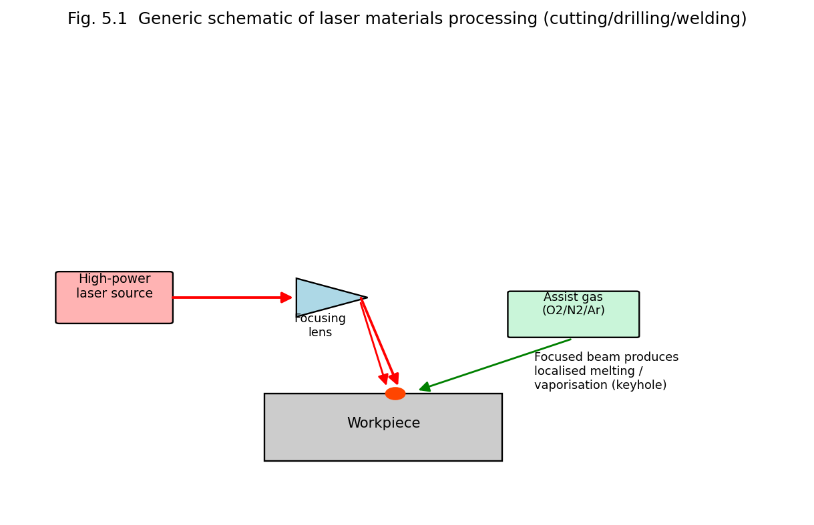
Fig. 5.1 Generic schematic of laser materials processing (cutting/drilling/welding): a focused high-power laser beam, optionally assisted by a coaxial gas jet, produces localised melting/vaporisation at the workpiece.
Common industrial laser sources: CO₂ lasers (10.6 μm, high average power, historically dominant for cutting/welding of metals — Unit 2, §2.3), Nd:YAG lasers (1064 nm, deliverable through optical fibre, well suited to spot-welding, drilling, marking — Unit 2, §2.6.2), and increasingly high-power fibre lasers (Unit 2, §2.8), which today are replacing CO₂ and Nd:YAG systems in much of industrial cutting/welding owing to their higher efficiency, superior beam quality and lower maintenance requirements.
Principle. A high-intensity, usually pulsed, laser beam is tightly focused onto the workpiece surface. Each pulse rapidly heats, melts and vaporises a small volume of material; the resulting vapour pressure/plasma recoil also ejects some molten material from the growing hole. Repeated pulses progressively deepen the hole; for very small, deep, precise holes, the beam (or the workpiece) may additionally be moved in a small circular (“trepanning”) pattern, or multiple pulses fired at slightly different focal depths, to control hole taper and roundness.
Characteristics: capable of producing very small-diameter holes (down to a few micrometres) with high aspect ratio, in materials difficult to drill mechanically (hardened steel, ceramics, diamond, thin films); extremely fast (a hole can be drilled in a single or a few pulses, milliseconds).
Applications: drilling of turbine-blade cooling holes (aerospace), fuel-injector nozzles (automotive), printed-circuit-board via holes (electronics), diamond dies for wire drawing, surgical needles. Limitations: hole taper (holes are often slightly conical rather than perfectly cylindrical); possible recast layer/micro-cracking at the hole edge from rapid re-solidification; limited maximum practical hole depth-to-diameter ratio.
Principle. A continuous or high-repetition-rate pulsed laser beam, focused to a small spot, is scanned (or the workpiece is moved) along the desired cut path, continuously melting/vaporising a narrow kerf (cut width) through the material thickness. Almost invariably, a coaxial assist gas jet (oxygen, nitrogen, or an inert gas such as argon, depending on the material and desired edge quality) is directed through the same nozzle as the focused beam:
Applications: sheet-metal cutting in automotive and general manufacturing, precision cutting of electronic components, fabric/textile and paper cutting (lower-power CO₂/fibre lasers), stent and medical-device manufacture. Advantages over mechanical cutting: no tool wear (non-contact), very narrow kerf (minimal material waste), ability to cut complex, intricate 2-D/3-D contours (CNC/CAD-driven), minimal mechanical distortion of the workpiece, applicable to hard/brittle materials difficult to cut mechanically. Limitations: reflective/highly conductive materials (e.g. copper, polished aluminium) are more difficult to cut (require higher power, shorter wavelengths, e.g. fibre lasers rather than CO₂); heat-affected zone (HAZ) at the cut edge may alter local material properties.
Principle. The focused laser beam locally melts the material at the joint between two workpieces (without vaporising it, unlike cutting), which then resolidifies to form a fused joint as the beam (or workpiece) advances along the joint line. Two regimes are recognised:
Applications: automotive body/chassis assembly (high-speed spot and seam welding), aerospace structural components, medical-device assembly (e.g. pacemaker housings), micro-welding of electronic components. Advantages: narrow heat-affected zone (minimal thermal distortion of surrounding material) compared with conventional arc welding; high welding speed; capable of welding dissimilar and difficult-to-weld metals; no filler material or physical electrode contact required; easily automated/robotically controlled. Limitations: requires precise joint fit-up/alignment (small gaps are not well tolerated, unlike arc welding which can bridge gaps with filler wire); high capital equipment cost; potential porosity in keyhole welds if process parameters are not well controlled.
Laser (surface) alloying uses a laser beam to locally melt a thin surface layer of a base material together with a deliberately introduced alloying element (pre-placed as a coating, or fed as powder/wire into the melt pool), so that upon rapid resolidification the surface region acquires a new, tailored composition and set of properties (e.g. enhanced hardness, wear resistance, or corrosion resistance) while the bulk of the component retains its original (often more economical, tougher) base composition.
Laser cladding is closely related: a coating material (metal powder or wire) is melted onto the substrate surface by the laser beam to build up a bonded (usually metallurgically fused, not merely mechanically bonded) surface layer — used both for protective/functional coatings and, in an additive-manufacturing (3-D printing) context, for building up or repairing (restoring worn dimensions of) metal components layer by layer.
Applications: wear- and corrosion-resistant coatings on turbine blades, valve seats, dies and moulds; repair/refurbishment of worn or damaged high-value components (avoiding complete replacement); functionally graded surface engineering.
Laser thermal deposition broadly refers to laser-assisted physical/thermal deposition of material onto a substrate (e.g. laser-assisted evaporation or laser-induced forward transfer), where the laser supplies precisely localised thermal energy to vaporise/transfer source material onto the target substrate.
Laser Chemical Vapour Deposition (LCVD) uses a focused laser beam to locally decompose a precursor gas (via localised heating — pyrolytic LCVD, or via direct photochemical bond-breaking — photolytic LCVD) so that a solid reaction product is deposited only at the laser-illuminated spot on the substrate, rather than over the whole substrate as in conventional (furnace-heated) CVD. Because deposition is confined to the small, precisely positioned focal spot, LCVD permits direct-write deposition of fine conductive lines, microstructures, or even free-standing 3-D micro-structures (by scanning/translating the focal spot), without the need for photolithographic masking.
Applications: repair of photomasks and integrated-circuit interconnects (direct-write conductor deposition), fabrication of micro-electromechanical (MEMS) structures, localised sensor/electrode fabrication, rapid prototyping of micro-scale conductive/functional structures. Advantages: maskless, highly localised, single-step direct-write process; can be performed at lower overall substrate temperature than conventional (furnace) CVD, since heating is confined to the immediate laser spot. Limitations: relatively slow (serial, spot-by-spot) process compared to whole-wafer conventional CVD; deposit quality/purity can be affected by incomplete precursor decomposition.
Principle. A laser beam (typically defocused/scanned to give a broader, lower-power-density spot than for cutting) rapidly heats a thin surface layer of a steel (or other hardenable alloy) component into the austenitic phase-field temperature range, without melting the surface; because only a thin surface layer is heated (the bulk of the component remains cool and acts as an effective heat sink), the heated layer self-quenches extremely rapidly (by rapid conduction of heat into the surrounding cold bulk material) as soon as the laser beam moves on, transforming the austenite into hard martensite — precisely the same metallurgical transformation exploited in conventional quench-hardening, but achieved here without any external quenching medium (oil/water bath) and confined to only the required surface region.
Applications: hardening of gear teeth, cam shafts, cylinder liners, cutting-tool edges, and other wear-critical machine-component surfaces, where only the surface (not the bulk) needs to be hard and wear-resistant while the core remains tough. Advantages: selective, localised hardening of only the required surface region/pattern (leaving the rest of the component in its original, tougher state); minimal distortion (since the bulk of the component stays cool, unlike furnace hardening of the entire part); no quenchant required; precisely repeatable and automatable.
Principle. A laser beam is used to locally heat a material (commonly a semiconductor, such as ion-implanted silicon) to a temperature sufficient to remove crystal-lattice defects/damage and/or to electrically activate implanted dopant atoms (by allowing them to move into substitutional lattice sites), followed by rapid resolidification/recrystallisation — again exploiting the very short, spatially confined thermal cycle achievable with a laser, which minimises unwanted diffusion of dopant profiles (a significant limitation of conventional furnace annealing, where the entire wafer must be held at high temperature for a comparatively long time).
Applications: post-ion-implantation annealing/dopant activation in semiconductor device fabrication; recrystallisation of amorphous or polycrystalline silicon thin films (e.g. for thin-film-transistor displays); stress relief in metal components. Advantages: extremely short, localised thermal cycle (microseconds to milliseconds) minimises dopant diffusion/spreading, preserving sharp, precisely engineered dopant concentration profiles that furnace annealing would blur.
Principle. LIDAR is the optical (laser) analogue of RADAR: a short, intense laser pulse is transmitted toward a target (or, for atmospheric LIDAR, toward the atmosphere itself); a fraction of the light is reflected or backscattered by the target/atmospheric constituents (aerosols, molecules, clouds) back toward a co-located receiver telescope and photodetector. By precisely timing the round-trip travel time \(\Delta t\) between pulse transmission and the detected return, the distance (range) \(R\) to the reflecting/scattering target is determined from
\[\boxed{R = \frac{c\,\Delta t}{2}}\]
the factor of 2 accounting for the round trip (out and back).
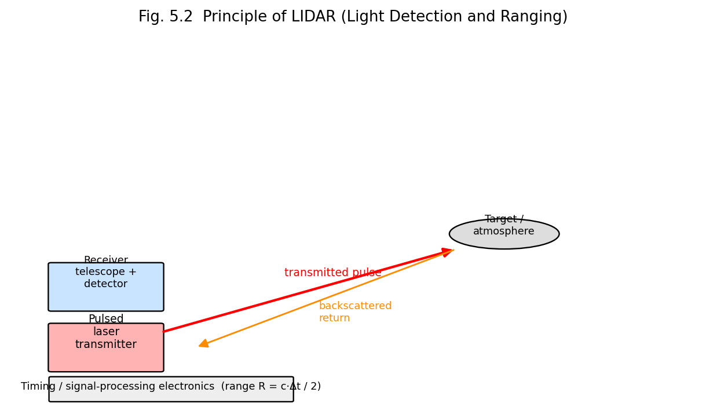
Fig. 5.2 Principle of LIDAR: a pulsed laser transmitter and a co-located receiver telescope/detector determine target range from the round-trip time of flight of the backscattered pulse.
Beyond simple ranging, LIDAR systems can additionally extract information from the spectral/polarisation content and the intensity profile of the backscattered signal (e.g. Doppler-shift LIDAR for wind-velocity measurement via the optical Doppler effect on aerosol backscatter; Differential Absorption LIDAR, DIAL, using two wavelengths — one on and one off a molecular absorption line — to determine the concentration of a specific atmospheric trace gas, such as ozone or water vapour, along the beam path).
Applications: high-resolution topographic mapping and surveying (airborne/satellite LIDAR); autonomous-vehicle obstacle detection and 3-D scene mapping; atmospheric and environmental remote sensing (aerosol/cloud profiling, pollutant/greenhouse-gas concentration measurement, wind-shear detection at airports); forestry/vegetation canopy mapping; military range-finding and target designation; archaeological/geological surface mapping (e.g. revealing terrain features hidden beneath forest canopy). Advantages over conventional (microwave) RADAR: much shorter wavelength gives far higher spatial resolution and the ability to detect very small particles (aerosols, individual molecules via Raman/resonance-fluorescence LIDAR) that are essentially invisible to radar. Limitations: unlike microwave radar, LIDAR performance is significantly degraded by heavy cloud, fog, or rain (strong optical scattering/attenuation along the beam path); eye-safety considerations constrain the usable transmitted laser power for many applications.
| Operation | Power-density Regime | Physical Mechanism | Typical Laser(s) | Key Applications |
|---|---|---|---|---|
| Drilling | Very high, pulsed | Vaporisation/ablation | Nd:YAG, fibre | Aerospace cooling holes, PCB vias |
| Cutting | High, CW/pulsed + assist gas | Melting/vaporisation, gas-assisted expulsion | CO₂, fibre, Nd:YAG | Sheet-metal fabrication |
| Welding | Moderate–high, CW/pulsed | Melting (conduction or keyhole) | CO₂, Nd:YAG, fibre | Automotive/aerospace assembly |
| Alloying/Cladding | Moderate–high | Surface melting + material addition | CO₂, Nd:YAG, fibre | Wear/corrosion-resistant coatings |
| Hardening | Moderate (no melting) | Austenitising + rapid self-quench | CO₂, diode | Gear/camshaft surface hardening |
| Annealing | Low–moderate, short pulse | Defect removal/dopant activation, no bulk heating | Excimer, pulsed Nd:YAG | Semiconductor processing |
Example 5.1. A pulsed Nd:YAG laser delivers 5 J of energy per pulse, of pulse duration 10 ns, focused to a spot of diameter 100 μm. Calculate (a) the peak power and (b) the peak power density (intensity) at the focal spot.
Peak power:
\[P_{peak} = \frac{E}{\tau} = \frac{5}{10 \times 10^{- 9}} = 5 \times 10^{8}\ \text{W} = 500\ \text{MW}\]
Focal spot area:
\[A = \pi r^{2} = \pi\left( \frac{100 \times 10^{- 6}}{2} \right)^{2} = \pi \times \left( 50 \times 10^{- 6} \right)^{2} \approx 7.85 \times 10^{- 9}\ \text{m}^{2}\]
Intensity:
\[I = \frac{P_{peak}}{A} = \frac{5 \times 10^{8}}{7.85 \times 10^{- 9}} \approx 6.4 \times 10^{16}\ \text{W/m}^{2} = 6.4 \times 10^{12}\ \text{W/cm}^{2}\]
Such extreme intensities are far above the vaporisation threshold of virtually any material, illustrating why pulsed, focused solid-state lasers are effective for drilling and precision material removal.
Example 5.2. A LIDAR pulse is transmitted toward a cloud layer and the backscattered return is detected after a round-trip time of 20 μs. Calculate the range (altitude) of the cloud layer.
\[R = \frac{c\,\Delta t}{2} = \frac{\left( 3 \times 10^{8} \right)\left( 20 \times 10^{- 6} \right)}{2} = \frac{6000}{2} = 3000\ \text{m} = 3\ \text{km}\]
| Quantity | Formula |
|---|---|
| Power density (intensity) at focus | \[I = P/A\] |
| LIDAR range | \[R = c\,\Delta t/2\] |